Sorting data set 20000421 tetrode D1 (channels 9, 10, 11, 12)
Table of Contents
- 1. Introduction
- 2. Tetrode D1 (channels 9, 10, 11, 12) analysis
- 2.1. Loading the data
- 2.2. Five number summary
- 2.3. Plot the data
- 2.4. Data normalization
- 2.5. Spike detection
- 2.6. Cuts
- 2.7. Events
- 2.8. Removing obvious superposition
- 2.9. Dimension reduction
- 2.10. Exporting for
GGobi - 2.11. kmeans clustering with 6 and 5 clusters
- 2.12. Long cuts creation
- 2.13. Peeling
- 2.14. Getting the spike trains
- 2.15. Getting the inter spike intervals and the forward and backward recurrence times
- 2.16. Testing
all_at_once
- 3. Analyzing a sequence of trials
- 4. Systematic analysis of the 30 trials from
1-Hexanol - 5. 25 trials with
Hexanal - 6. 25 trials with
Cis-3-Hexen-1-ol - 7. 25 trials with
Trans-2-Hexen-1-ol - 8. 25 trials with
1-Hexen-3-ol - 9. 25 trials with
3-Pentanone - 10. 25 trials with
1-Heptanol - 11. 25 trials with
1-Octanol (10^-0) first - 12. 25 trials with
2-Heptanone - 13. 25 trials with
3-Heptanone - 14. 25 trials with
Citral - 15. 25 trials with
Apple - 16. 25 trials with
Mint - 17. 25 trials with
Strawberry - 18. 25 trials with
Amyl Acetate - 19. 25 trials with
Octaldehyde - 20. 25 trials with
1-Octanol (10^-5) - 21. 25 trials with
1-Octanol (10^-4) - 22. 25 trials with
1-Octanol (10^-3) - 23. 25 trials with
1-Octanol (10^-2) - 24. 25 trials with
1-Octanol (10^-1) - 25. 25 trials with
1-Octanol (10^-0) second
1 Introduction
This is the description of how to do the (spike) sorting of tetrode D1 (channels 9, 10, 11, 12) from data set locust20000421.
1.1 Getting the data
The data are in file locust20000421.hdf5 located on zenodo and can be downloaded interactivelly with a web browser or by typing at the command line:
wget https://zenodo.org/record/21589/files/locust20000421.hdf5
In the sequel I will assume that R has been started in the directory where the data were downloaded (in other words, the working direcory should be the one containing the data.
The data are in HDF5 format and the easiest way to get them into R is to install the rhdf5 package from Bioconductor. Once the installation is done, the library is loaded into R with:
library(rhdf5)
We can then get a (long and detailed) listing of our data file content with (result not shown):
h5ls("locust20000421.hdf5")
We can get the content of LabBook metadata from the shell with:
h5dump -a "LabBook" locust20000421.hdf5
1.2 Getting the code
The code can be sourced as follows:
source("https://raw.githubusercontent.com/christophe-pouzat/zenodo-locust-datasets-analysis/master/R_Sorting_Code/sorting_with_r.R")
2 Tetrode D1 (channels 9, 10, 11, 12) analysis
We now want to get our "model", that is a dictionnary of waveforms (one waveform per neuron and per recording site). To that end we are going to use the first 60 s of data contained in the Spontaneous Group (in HDF5 jargon).
2.1 Loading the data
So we start by loading the data from channels 9, 10, 11, 12 into R:
lD = rbind(cbind(h5read("locust20000421.hdf5", "/Spontaneous/ch9"),
h5read("locust20000421.hdf5", "/Spontaneous/ch10"),
h5read("locust20000421.hdf5", "/Spontaneous/ch11"),
h5read("locust20000421.hdf5", "/Spontaneous/ch12")))
dim(lD)
| 892928 |
| 4 |
2.2 Five number summary
We get the Five number summary with:
summary(lD,digits=2)
| Min. : 746 | Min. :1653 | Min. :1497 | Min. :1398 |
| 1st Qu.:2005 | 1st Qu.:1992 | 1st Qu.:2013 | 1st Qu.:2011 |
| Median :2048 | Median :2033 | Median :2055 | Median :2054 |
| Mean :2047 | Mean :2033 | Mean :2054 | Mean :2053 |
| 3rd Qu.:2092 | 3rd Qu.:2074 | 3rd Qu.:2095 | 3rd Qu.:2095 |
| Max. :2996 | Max. :2423 | Max. :2524 | Max. :2581 |
It shows that the channels have very similar properties as far as the median and the inter-quartile range (IQR) are concerned. The minimum is much smaller on the first channel. This suggests that the largest spikes are going to be found here (remember that spikes are going mainly downwards).
2.3 Plot the data
We "convert" the data matrix lD into a time series object with:
lD = ts(lD,start=0,freq=15e3)
We can then plot the whole data with (not shown since it makes a very figure):
plot(lD)
2.4 Data normalization
As always we normalize such that the median absolute deviation (MAD) becomes 1:
lD.mad = apply(lD,2,mad) lD = t((t(lD)-apply(lD,2,median))/lD.mad) lD = ts(lD,start=0,freq=15e3)
Once this is done we explore interactively the data with:
explore(lD,col=c("black","grey70"))
Most spikes can be seen on the 4 recording sites and there are different spike waveform!
2.5 Spike detection
Since the spikes are mainly going downwards, we will detect valleys instead of peaks:
lDf = -lD filter_length = 3 threshold_factor = 4.5 lDf = filter(lDf,rep(1,filter_length)/filter_length) lDf[is.na(lDf)] = 0 lDf.mad = apply(lDf,2,mad) lDf_mad_original = lDf.mad lDf = t(t(lDf)/lDf_mad_original) thrs = threshold_factor*c(1,1,1,1) bellow.thrs = t(t(lDf) < thrs) lDfr = lDf lDfr[bellow.thrs] = 0 remove(lDf) sp0 = peaks(apply(lDfr,1,sum),15) remove(lDfr) sp0
eventsPos object with indexes of 1184 events. Mean inter event interval: 754.31 sampling points, corresponding SD: 861.44 sampling points Smallest and largest inter event intervals: 17 and 9283 sampling points.
Every time a filter length / threshold combination is tried, the detection is checked interactively with:
explore(sp0,lD,col=c("black","grey50"))
2.6 Cuts
We proceed as usual to get the cut length right:
evts = mkEvents(sp0,lD,49,50)
evts.med = median(evts)
evts.mad = apply(evts,1,mad)
plot_range = range(c(evts.med,evts.mad))
plot(evts.med,type="n",ylab="Amplitude",
ylim=plot_range)
abline(v=seq(0,400,10),col="grey")
abline(h=c(0,1),col="grey")
lines(evts.med,lwd=2)
lines(evts.mad,col=2,lwd=2)
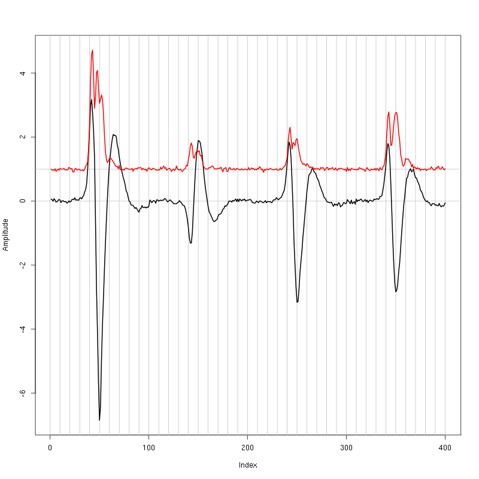
Figure 1: Setting the cut length for the data from tetrode D1 (channels 9, 10, 11, 12). We see that we need 15 points before the peak and 20 after.
We see that we need roughly 15 points before the peak and 20 after.
2.7 Events
We now cut our events:
evts = mkEvents(sp0,lD,14,20) summary(evts)
events object deriving from data set: lD. Events defined as cuts of 35 sampling points on each of the 4 recording sites. The 'reference' time of each event is located at point 15 of the cut. There are 1184 events in the object.
We can as usual visualize the first 200 events with:
evts[,1:200]
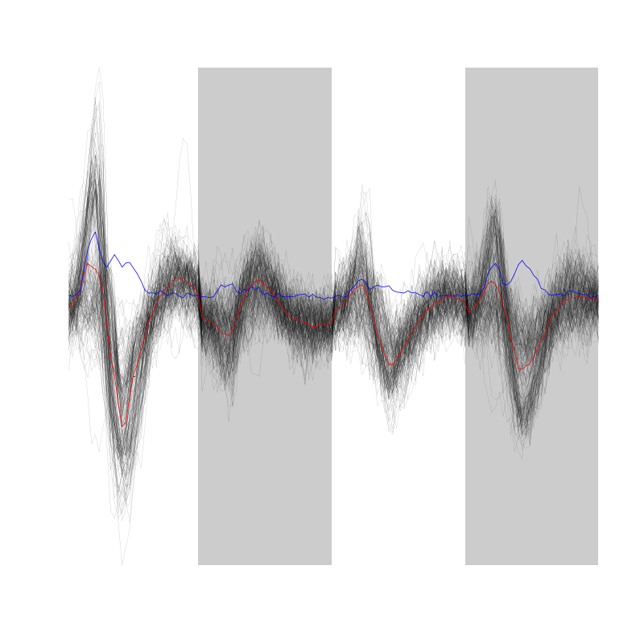
Figure 2: First 200 events for the data from tetrode D1 (channels 1, 3, 5, 7).
There are few superpositions so we try to remove the most obvious ones before doing the dimension reduction.
2.8 Removing obvious superposition
Since some spikes have a pronounced early peak, we will look for superposition only on the late phase (last 10 points) of the events. We define function goodEvtsFct with:
goodEvtsFct = function(samp,thr=3) {
samp.med = apply(samp,1,median)
samp.mad = apply(samp,1,mad)
samp.r = apply(samp,2,function(x) {x[1:25] = 0;x})
apply(samp.r,2,function(x) all(abs(x-samp.med) < thr*samp.mad))
}
We apply it with a threshold of 4 times the MAD:
goodEvts = goodEvtsFct(evts,4)
2.9 Dimension reduction
We do a PCA on our good events set:
evts.pc = prcomp(t(evts[,goodEvts]))
We look at the projections on the first 4 principle components:
panel.dens = function(x,...) {
usr = par("usr")
on.exit(par(usr))
par(usr = c(usr[1:2], 0, 1.5) )
d = density(x, adjust=0.5)
x = d$x
y = d$y
y = y/max(y)
lines(x, y, col="grey50", ...)
}
pairs(evts.pc$x[,1:4],pch=".",gap=0,diag.panel=panel.dens)
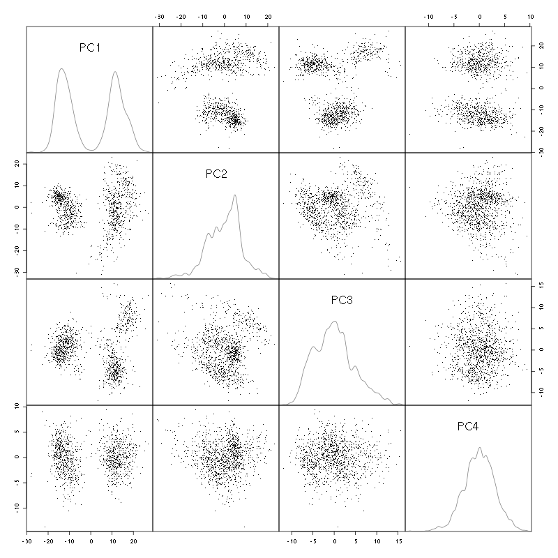
Figure 3: Events from tetrode D1 (channels 9, 10, 11, 12) projected onto the first 4 PCs.
I see at least 4 clusters. We can also look at the projections on the PC pairs defined by the next 4 PCs:
pairs(evts.pc$x[,5:8],pch=".",gap=0,diag.panel=panel.dens)
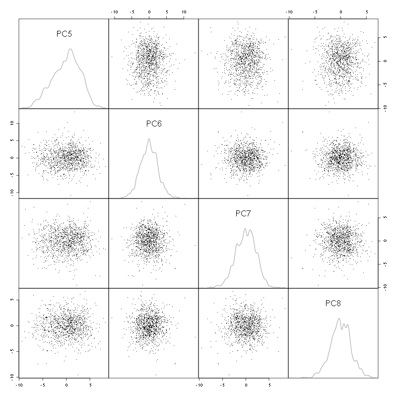
Figure 4: Events from tetrode D1 (channels 9, 10, 11, 12) projected onto PC 5 to 8.
There is not much structure left beyond the 5th PC.
2.10 Exporting for GGobi
We export the events projected onto the first 8 principle components in csv format:
write.csv(evts.pc$x[,1:8],file="tetD1_evts.csv")
Using the rotation display of GGobi with the first 3 principle components and the 2D tour with the first 4 components I see at least 4 clusters but there are probably 5 or 6. So we will start with a kmeans with 5 centers.
2.11 kmeans clustering with 6 and 5 clusters
nbc=6
set.seed(20110928,kind="Mersenne-Twister")
km = kmeans(evts.pc$x[,1:5],centers=nbc,iter.max=100,nstart=100)
label = km$cluster
cluster.med = sapply(1:nbc, function(cIdx) median(evts[,goodEvts][,label==cIdx]))
sizeC = sapply(1:nbc,function(cIdx) sum(abs(cluster.med[,cIdx])))
newOrder = sort.int(sizeC,decreasing=TRUE,index.return=TRUE)$ix
cluster.mad = sapply(1:nbc, function(cIdx) {ce = t(evts[,goodEvts]);ce = ce[label==cIdx,];apply(ce,2,mad)})
cluster.med = cluster.med[,newOrder]
cluster.mad = cluster.mad[,newOrder]
labelb = sapply(1:nbc, function(idx) (1:nbc)[newOrder==idx])[label]
We write a new csv file with the data and the labels:
write.csv(cbind(evts.pc$x[,1:5],labelb),file="tetD1_sorted.csv")
It gives what was expected.
We get a plot showing the events attributed to each unit with:
layout(matrix(1:nbc,nr=nbc)) par(mar=c(1,1,1,1)) for (i in (1:nbc)) plot(evts[,goodEvts][,labelb==i],y.bar=5)
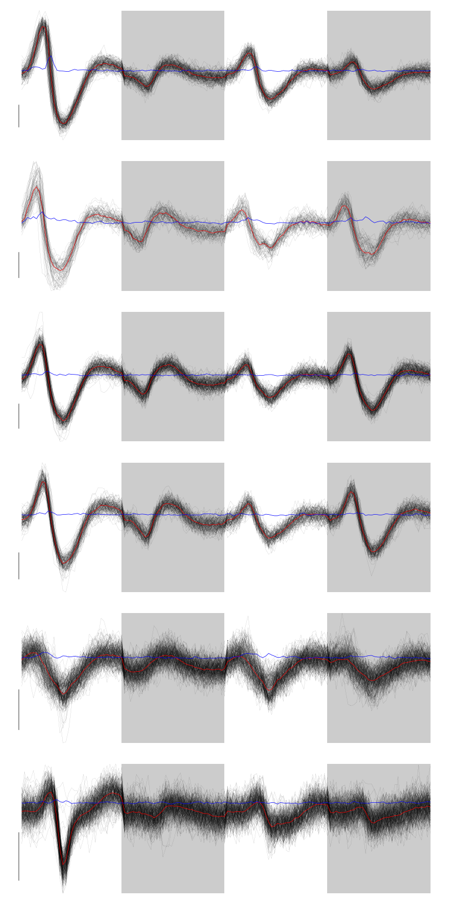
Figure 5: The events of the six clusters of tetrode D1
2, 3 and 4 must be the same. 5 shows evidence that there are at least two neurons, and that some events were missed. We fuse clusters 1 and 2, 3 and 4 and we split 5.
nbc=5
labelb[labelb==3]=2
labelb[labelb==4]=2
kmB = kmeans(evts.pc$x[labelb==5,1:5],centers=2,iter.max=100,nstart=100)
labelB = kmB$cluster
c5_idx = (1:length(labelb))[labelb==5]
for (i in 1:length(c5_idx))
labelb[c5_idx[i]] = ifelse(labelB[i]==1,3,4)
labelb[labelb==6]=5
We write a new csv file with the data and the labels:
write.csv(cbind(evts.pc$x[,1:5],labelb),file="tetD1b_sorted.csv")
We get a plot showing the events attributed to each unit with:
layout(matrix(1:nbc,nr=nbc))
par(mar=c(1,1,1,1))
for (i in (1:nbc)) {
ei = labelb==i
ni = sum(ei)
plot(evts[,goodEvts][,ei][,1:ifelse(ni>200,200,ni)],y.bar=5)
}
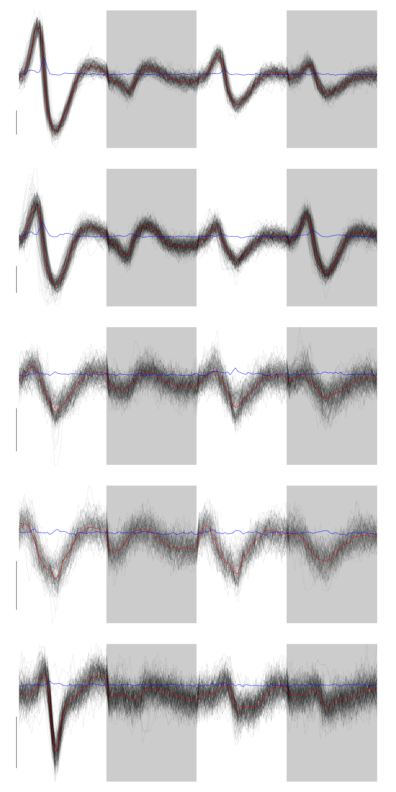
Figure 6: The first 200 events of the five clusters of tetrode D1
2.12 Long cuts creation
For the peeling process we need templates that start and end at 0 (we will otherwise generate artifacts when we subtract). We proceed "as usual" with (I tried first with the default value for parameters before and after but I reduced their values after looking at the centers, see the next figure):
c_before = 49
c_after = 80
centers = lapply(1:nbc, function(i)
mk_center_list(sp0[goodEvts][labelb==i],lD,
before=c_before,after=c_after))
names(centers) = paste("Cluster",1:nbc)
We then make sure that our cuts are long enough by looking at them:
layout(matrix(1:nbc,nr=nbc))
par(mar=c(1,4,1,1))
the_range=c(min(sapply(centers,function(l) min(l$center))),
max(sapply(centers,function(l) max(l$center))))
for (i in 1:nbc) {
template = centers[[i]]$center
plot(template,lwd=2,col=2,
ylim=the_range,type="l",ylab="")
abline(h=0,col="grey50")
abline(v=(1:2)*(c_before+c_after)+1,col="grey50")
lines(filter(template,rep(1,filter_length)/filter_length),
col=1,lty=3,lwd=2)
abline(h=-threshold_factor,col="grey",lty=2,lwd=2)
lines(centers[[i]]$centerD,lwd=2,col=4)
}
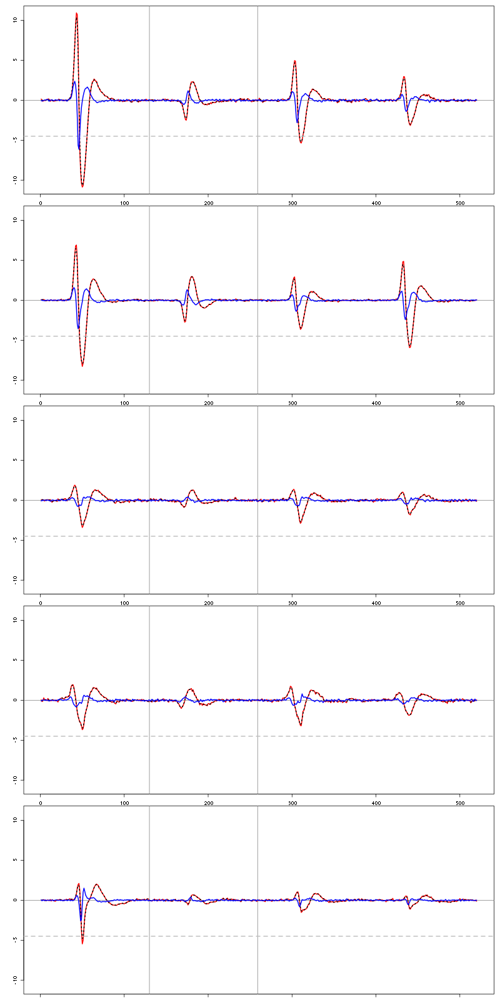
Figure 7: The five templates (red) together with their first derivative (blue) all with the same scale. The dashed black curve show the templates filtered with the filter used during spike detection and the horizontal dashed grey line shows the detection threshold.
Only unit 1 and 2 should reliably pass our threshold, we expect to miss some events from 5, while the other two should be multi-unit…
2.13 Peeling
We can now do the peeling.
2.13.1 Round 0
We classify, predict, subtract and check how many non-classified events we get:
round0 = lapply(as.vector(sp0),classify_and_align_evt,
data=lD,centers=centers,
before=c_before,after=c_after)
pred0 = predict_data(round0,centers,data_length = dim(lD)[1])
lD_1 = lD - pred0
sum(sapply(round0, function(l) l[[1]] == '?'))
9
We can see the difference before / after peeling for the data between 1.1 and 1.2 s:
ii = 1:1500 + 1.1*15000
tt = ii/15000
par(mar=c(1,1,1,1))
plot(tt, lD[ii,1], axes = FALSE,
type="l",ylim=c(-50,10),
xlab="",ylab="")
lines(tt, lD_1[ii,1], col='red')
lines(tt, lD[ii,2]-15, col='black')
lines(tt, lD_1[ii,2]-15, col='red')
lines(tt, lD[ii,3]-25, col='black')
lines(tt, lD_1[ii,3]-25, col='red')
lines(tt, lD[ii,4]-40, col='black')
lines(tt, lD_1[ii,4]-40, col='red')
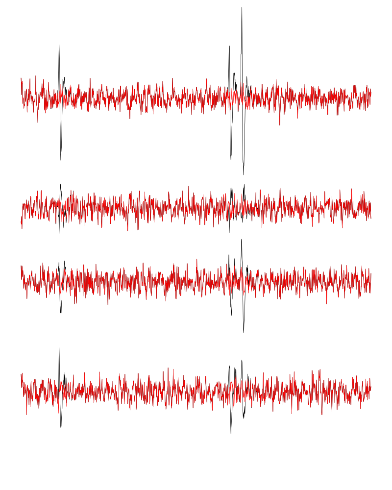
Figure 8: The first peeling illustrated on 100 ms of data, the raw data are in black and the first subtration in red.
2.13.2 Round 1
We keep going, using the subtracted data lD_1 as "raw data", detecting on all sites using the original MAD for normalization and a shorter minimal allowed time between detected spikes:
lDf = -lD_1 lDf = filter(lDf,rep(1,filter_length)/filter_length) lDf[is.na(lDf)] = 0 lDf = t(t(lDf)/lDf_mad_original) thrs = threshold_factor*c(1,1,1,1) bellow.thrs = t(t(lDf) < thrs) lDfr = lDf lDfr[bellow.thrs] = 0 remove(lDf) sp1 = peaks(apply(lDfr,1,sum),10) remove(lDfr) sp1
eventsPos object with indexes of 66 events. Mean inter event interval: 13465.78 sampling points, corresponding SD: 16215.94 sampling points Smallest and largest inter event intervals: 13 and 88036 sampling points.
We classify, predict, subtract and check how many non-classified events we get:
round1 = lapply(as.vector(sp1),classify_and_align_evt,
data=lD_1,centers=centers,
before=c_before,after=c_after)
pred1 = predict_data(round1,centers,data_length = dim(lD)[1])
lD_2 = lD_1 - pred1
sum(sapply(round1, function(l) l[[1]] == '?'))
13
We look at what's left with (not shown):
explore(sp1,lD_2,col=c("black","grey50"))
We decide to stop here.
2.14 Getting the spike trains
round_all = c(round0,round1)
spike_trains = lapply(paste("Cluster",1:nbc),
function(cn) sort(sapply(round_all[sapply(round_all,
function(l) l[[1]]==cn)],
function(l) l[[2]]+l[[3]])))
names(spike_trains) = paste("Cluster",1:nbc)
2.15 Getting the inter spike intervals and the forward and backward recurrence times
2.15.1 ISI distributions
We first get the ISI (inter spike intervals) of each unit:
isi = sapply(spike_trains, diff) names(isi) = names(spike_trains)
We get the ISI ECDF for the five units with:
layout(matrix(1:(nbc+nbc %% 2),nr=ceiling(nbc/2))) par(mar=c(4,5,6,1)) for (cn in names(isi)) plot_isi(isi[[cn]],main=cn)
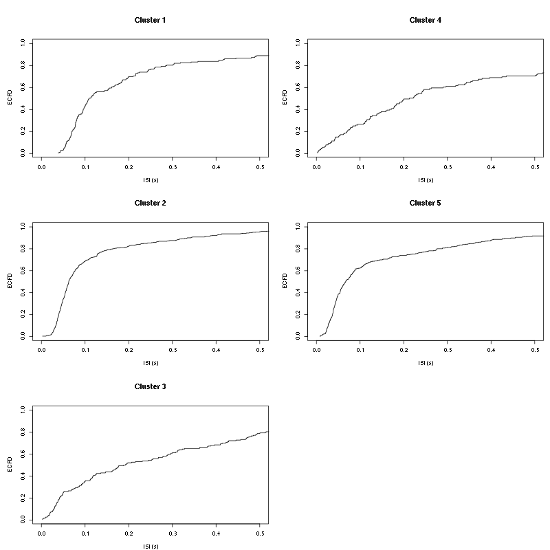
Figure 9: ISI ECDF for the five units.
2.15.2 Forward and Backward Recurrence Times
The forward recurrence time (FRT) between neuron A and B is the elapsed time between a spike in A and the next spike in B. The backward recurrence time (BRT) is the same thing except that we look for the former spike in B. If A and B are not correlated, the expected density of the FRT is the survival function (1-CDF) of the ISI from B divided by the mean ISI of B (the same holds for the BRT under the null hypothesis after taking the opposite). All that is correct if the data are stationary.
On the data at hand that gives:
layout_matrix = matrix(0,nr=nbc,nc=nbc)
counter = 1
for (i in 1:nbc)
for (j in 1:nbc)
if (i != j) {
layout_matrix[i,j] = counter
counter = counter +1
}
layout(layout_matrix)
par(mar=c(4,3,4,1))
for (i in 1:nbc)
for (j in 1:nbc)
if (i != j)
test_rt(spike_trains[[i]],
spike_trains[[j]],
ylab="",main=paste("Units",i,"and",j))
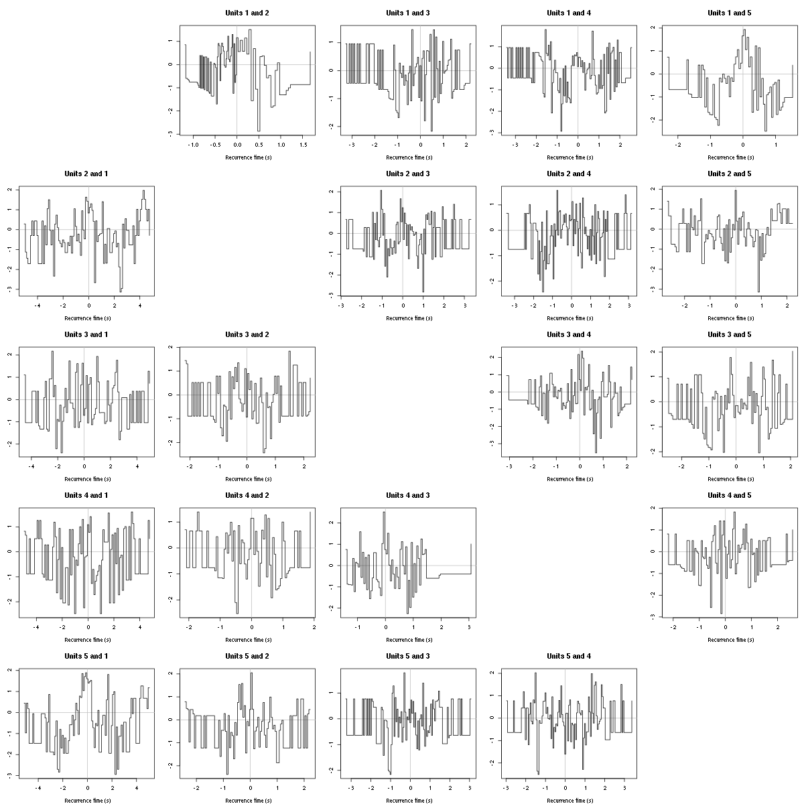
Figure 10: Graphical tests of the Backward and Forward Reccurrence Times distrution agaisnt the null hypothesis (no interaction). If the null is correct, the curves should be IID draws from a standard normal distribution.
2.16 Testing all_at_once
We test the function with:
## We need again an un-normalized version of the data
ref_data = rbind(cbind(h5read("locust20000421.hdf5", "/Spontaneous/ch9"),
h5read("locust20000421.hdf5", "/Spontaneous/ch10"),
h5read("locust20000421.hdf5", "/Spontaneous/ch11"),
h5read("locust20000421.hdf5", "/Spontaneous/ch12")))
## We can now use our function
aao=all_at_once(data=ref_data, centers, thres=threshold_factor*c(1,1,1,1),
filter_length_1=filter_length, filter_length=filter_length,
minimalDist_1=15, minimalDist=10,
before=c_before, after=c_after,
detection_cycle=c(0,0), verbose=2)
The five number summary is:
V1 V2 V3 V4
Min. : 746 Min. :1653 Min. :1497 Min. :1398
1st Qu.:2005 1st Qu.:1992 1st Qu.:2013 1st Qu.:2011
Median :2048 Median :2033 Median :2055 Median :2054
Mean :2047 Mean :2033 Mean :2054 Mean :2053
3rd Qu.:2092 3rd Qu.:2074 3rd Qu.:2095 3rd Qu.:2095
Max. :2996 Max. :2423 Max. :2524 Max. :2581
Doing now round 0 detecting on all sites
Total Cluster 1 Cluster 2 Cluster 3 Cluster 4 Cluster 5 ?
1184 170 407 174 132 292 9
Doing now round 1 detecting on all sites
Total Cluster 1 Cluster 2 Cluster 3 Cluster 4 Cluster 5 ?
66 4 5 11 8 25 13
Global counts at classification's end:
Total Cluster 1 Cluster 2 Cluster 3 Cluster 4 Cluster 5 ?
1247 174 412 185 140 317 19
We see that we are getting back the numbers we obtained before step by step.
We can compare the "old" and "new" centers with (not shown):
layout(matrix(1:nbc,nr=nbc))
par(mar=c(1,4,1,1))
for (i in 1:nbc) {
plot(centers[[i]]$center,lwd=2,col=2,
ylim=the_range,type="l")
abline(h=0,col="grey50")
abline(v=(c_before+c_after)+1,col="grey50")
lines(aao$centers[[i]]$center,lwd=1,col=4)
}
They are not exactly identical since the new version is computed with all events (superposed or not) attributed to each neuron.
3 Analyzing a sequence of trials
3.1 Create a directory were results get saved
We will carry out an analysis of sequences of 30/25 trials with a given odor. At the end of the analysis of the sequence we will save some intermediate R object in a directory we are now creating.:
if (!dir.exists("tetD1_analysis"))
dir.create("tetD1_analysis")
3.2 Define a "taylored" version of sort_many_trials
In order to save space and to avoid typos, we define next a taylored version of sort_many_trials:
smt = function(stim_name,
trial_nbs,
centers,
counts) {
sort_many_trials(inter_trial_time=10*15000,
get_data_fct=function(i,s) get_data(i,s,
channels = c("ch09","ch10","ch11","ch12"),
file="locust20000421.hdf5"),
stim_name=stim_name,
trial_nbs=trial_nbs,
centers=centers,
counts=counts,
all_at_once_call_list=list(thres=threshold_factor*c(1,1,1,1),
filter_length_1=filter_length, filter_length=filter_length,
minimalDist_1=15, minimalDist=10,
before=c_before, after=c_after,
detection_cycle=c(0,0), verbose=1),
layout_matrix=matrix(1:6,nr=3),new_weight_in_update=0.01
)
}
4 Systematic analysis of the 30 trials from 1-Hexanol
The LabBook mentions that a drop of solution was added at trial 13 but looking at the data, no major corruption occurs except for a very sharp artifact so we keep that trial.
4.1 Doing the job
a_1_Hexanol_tetD1=smt(stim_name="1-Hexanol",
trial_nbs=1:30,
centers=aao$centers,
counts=aao$counts)
***************
Doing now trial 1 of 1-Hexanol
The five number summary is:
ch09 ch10 ch11 ch12
Min. :1226 Min. :1697 Min. :1662 Min. :1540
1st Qu.:2004 1st Qu.:1991 1st Qu.:2012 1st Qu.:2011
Median :2048 Median :2033 Median :2054 Median :2054
Mean :2047 Mean :2034 Mean :2053 Mean :2053
3rd Qu.:2092 3rd Qu.:2076 3rd Qu.:2094 3rd Qu.:2095
Max. :3011 Max. :2382 Max. :2566 Max. :2531
Global counts at classification's end:
Total Cluster 1 Cluster 2 Cluster 3 Cluster 4 Cluster 5 ?
101 9 30 21 10 30 1
Trial 1 done!
******************
***************
Doing now trial 2 of 1-Hexanol
The five number summary is:
ch09 ch10 ch11 ch12
Min. :1171 Min. :1702 Min. :1557 Min. :1510
1st Qu.:2004 1st Qu.:1991 1st Qu.:2012 1st Qu.:2011
Median :2048 Median :2033 Median :2054 Median :2054
Mean :2047 Mean :2034 Mean :2053 Mean :2053
3rd Qu.:2092 3rd Qu.:2075 3rd Qu.:2095 3rd Qu.:2095
Max. :2987 Max. :2391 Max. :2485 Max. :2526
Global counts at classification's end:
Total Cluster 1 Cluster 2 Cluster 3 Cluster 4 Cluster 5 ?
125 4 42 24 11 40 4
Trial 2 done!
******************
***************
Doing now trial 3 of 1-Hexanol
The five number summary is:
ch09 ch10 ch11 ch12
Min. : 975 Min. :1683 Min. :1546 Min. :1516
1st Qu.:2003 1st Qu.:1991 1st Qu.:2012 1st Qu.:2010
Median :2049 Median :2033 Median :2054 Median :2054
Mean :2047 Mean :2034 Mean :2053 Mean :2053
3rd Qu.:2094 3rd Qu.:2076 3rd Qu.:2096 3rd Qu.:2097
Max. :3067 Max. :2404 Max. :2535 Max. :2528
Global counts at classification's end:
Total Cluster 1 Cluster 2 Cluster 3 Cluster 4 Cluster 5 ?
262 47 101 15 17 75 7
Trial 3 done!
******************
***************
Doing now trial 4 of 1-Hexanol
The five number summary is:
ch09 ch10 ch11 ch12
Min. :1155 Min. :1686 Min. :1624 Min. :1493
1st Qu.:2004 1st Qu.:1991 1st Qu.:2012 1st Qu.:2011
Median :2048 Median :2033 Median :2054 Median :2054
Mean :2047 Mean :2034 Mean :2053 Mean :2053
3rd Qu.:2093 3rd Qu.:2075 3rd Qu.:2095 3rd Qu.:2095
Max. :3057 Max. :2409 Max. :2554 Max. :2561
Global counts at classification's end:
Total Cluster 1 Cluster 2 Cluster 3 Cluster 4 Cluster 5 ?
175 15 56 26 10 67 1
Trial 4 done!
******************
***************
Doing now trial 5 of 1-Hexanol
The five number summary is:
ch09 ch10 ch11 ch12
Min. :1160 Min. :1670 Min. :1610 Min. :1523
1st Qu.:2004 1st Qu.:1991 1st Qu.:2012 1st Qu.:2011
Median :2048 Median :2033 Median :2054 Median :2054
Mean :2047 Mean :2034 Mean :2053 Mean :2053
3rd Qu.:2092 3rd Qu.:2076 3rd Qu.:2095 3rd Qu.:2095
Max. :2912 Max. :2398 Max. :2478 Max. :2544
Global counts at classification's end:
Total Cluster 1 Cluster 2 Cluster 3 Cluster 4 Cluster 5 ?
135 2 72 21 22 17 1
Trial 5 done!
******************
***************
Doing now trial 6 of 1-Hexanol
The five number summary is:
ch09 ch10 ch11 ch12
Min. :1088 Min. :1703 Min. :1558 Min. :1463
1st Qu.:2004 1st Qu.:1991 1st Qu.:2012 1st Qu.:2011
Median :2048 Median :2033 Median :2054 Median :2054
Mean :2047 Mean :2034 Mean :2053 Mean :2053
3rd Qu.:2094 3rd Qu.:2076 3rd Qu.:2096 3rd Qu.:2096
Max. :3005 Max. :2431 Max. :2517 Max. :2557
Global counts at classification's end:
Total Cluster 1 Cluster 2 Cluster 3 Cluster 4 Cluster 5 ?
201 44 75 14 8 56 4
Trial 6 done!
******************
***************
Doing now trial 7 of 1-Hexanol
The five number summary is:
ch09 ch10 ch11 ch12
Min. :1066 Min. :1705 Min. :1608 Min. :1517
1st Qu.:2004 1st Qu.:1991 1st Qu.:2012 1st Qu.:2011
Median :2048 Median :2033 Median :2054 Median :2053
Mean :2047 Mean :2034 Mean :2053 Mean :2053
3rd Qu.:2093 3rd Qu.:2076 3rd Qu.:2095 3rd Qu.:2096
Max. :3121 Max. :2459 Max. :2571 Max. :2567
Global counts at classification's end:
Total Cluster 1 Cluster 2 Cluster 3 Cluster 4 Cluster 5 ?
163 17 60 26 14 44 2
Trial 7 done!
******************
***************
Doing now trial 8 of 1-Hexanol
The five number summary is:
ch09 ch10 ch11 ch12
Min. :1110 Min. :1703 Min. :1586 Min. :1557
1st Qu.:2003 1st Qu.:1991 1st Qu.:2012 1st Qu.:2011
Median :2048 Median :2033 Median :2054 Median :2054
Mean :2047 Mean :2034 Mean :2053 Mean :2053
3rd Qu.:2094 3rd Qu.:2076 3rd Qu.:2095 3rd Qu.:2095
Max. :3113 Max. :2363 Max. :2526 Max. :2536
Global counts at classification's end:
Total Cluster 1 Cluster 2 Cluster 3 Cluster 4 Cluster 5 ?
211 30 68 28 15 67 3
Trial 8 done!
******************
***************
Doing now trial 9 of 1-Hexanol
The five number summary is:
ch09 ch10 ch11 ch12
Min. :1065 Min. :1670 Min. :1573 Min. :1543
1st Qu.:2003 1st Qu.:1991 1st Qu.:2012 1st Qu.:2010
Median :2048 Median :2033 Median :2054 Median :2054
Mean :2047 Mean :2034 Mean :2053 Mean :2053
3rd Qu.:2094 3rd Qu.:2076 3rd Qu.:2096 3rd Qu.:2096
Max. :3100 Max. :2393 Max. :2500 Max. :2549
Global counts at classification's end:
Total Cluster 1 Cluster 2 Cluster 3 Cluster 4 Cluster 5 ?
217 21 73 24 15 83 1
Trial 9 done!
******************
***************
Doing now trial 10 of 1-Hexanol
The five number summary is:
ch09 ch10 ch11 ch12
Min. :1106 Min. :1711 Min. :1595 Min. :1486
1st Qu.:2003 1st Qu.:1991 1st Qu.:2012 1st Qu.:2011
Median :2048 Median :2033 Median :2054 Median :2054
Mean :2047 Mean :2034 Mean :2053 Mean :2053
3rd Qu.:2093 3rd Qu.:2076 3rd Qu.:2095 3rd Qu.:2095
Max. :3083 Max. :2386 Max. :2530 Max. :2557
Global counts at classification's end:
Total Cluster 1 Cluster 2 Cluster 3 Cluster 4 Cluster 5 ?
118 10 47 16 8 36 1
Trial 10 done!
******************
***************
Doing now trial 11 of 1-Hexanol
The five number summary is:
ch09 ch10 ch11 ch12
Min. :1003 Min. :1703 Min. :1567 Min. :1464
1st Qu.:2003 1st Qu.:1991 1st Qu.:2012 1st Qu.:2010
Median :2048 Median :2033 Median :2054 Median :2054
Mean :2047 Mean :2034 Mean :2053 Mean :2053
3rd Qu.:2094 3rd Qu.:2076 3rd Qu.:2095 3rd Qu.:2096
Max. :3024 Max. :2413 Max. :2575 Max. :2528
Global counts at classification's end:
Total Cluster 1 Cluster 2 Cluster 3 Cluster 4 Cluster 5 ?
220 25 111 16 16 50 2
Trial 11 done!
******************
***************
Doing now trial 12 of 1-Hexanol
The five number summary is:
ch09 ch10 ch11 ch12
Min. :1097 Min. :1731 Min. :1555 Min. :1519
1st Qu.:2004 1st Qu.:1991 1st Qu.:2012 1st Qu.:2011
Median :2048 Median :2033 Median :2054 Median :2054
Mean :2047 Mean :2034 Mean :2053 Mean :2053
3rd Qu.:2093 3rd Qu.:2076 3rd Qu.:2095 3rd Qu.:2095
Max. :3085 Max. :2390 Max. :2533 Max. :2513
Global counts at classification's end:
Total Cluster 1 Cluster 2 Cluster 3 Cluster 4 Cluster 5 ?
119 2 44 20 7 44 2
Trial 12 done!
******************
***************
Doing now trial 13 of 1-Hexanol
The five number summary is:
ch09 ch10 ch11 ch12
Min. : 833 Min. : 0 Min. :1346 Min. :1185
1st Qu.:2003 1st Qu.:1991 1st Qu.:2012 1st Qu.:2011
Median :2048 Median :2033 Median :2054 Median :2053
Mean :2047 Mean :2034 Mean :2053 Mean :2053
3rd Qu.:2093 3rd Qu.:2076 3rd Qu.:2094 3rd Qu.:2095
Max. :4095 Max. :2795 Max. :4095 Max. :4095
Global counts at classification's end:
Total Cluster 1 Cluster 2 Cluster 3 Cluster 4 Cluster 5 ?
145 12 37 19 16 57 4
Trial 13 done!
******************
***************
Doing now trial 14 of 1-Hexanol
The five number summary is:
ch09 ch10 ch11 ch12
Min. : 955 Min. :1741 Min. :1556 Min. :1431
1st Qu.:2003 1st Qu.:1991 1st Qu.:2012 1st Qu.:2011
Median :2047 Median :2033 Median :2054 Median :2054
Mean :2047 Mean :2034 Mean :2053 Mean :2053
3rd Qu.:2093 3rd Qu.:2076 3rd Qu.:2095 3rd Qu.:2096
Max. :3170 Max. :2384 Max. :2517 Max. :2598
Global counts at classification's end:
Total Cluster 1 Cluster 2 Cluster 3 Cluster 4 Cluster 5 ?
144 6 74 22 8 31 3
Trial 14 done!
******************
***************
Doing now trial 15 of 1-Hexanol
The five number summary is:
ch09 ch10 ch11 ch12
Min. : 962 Min. :1644 Min. :1531 Min. :1519
1st Qu.:2003 1st Qu.:1991 1st Qu.:2011 1st Qu.:2011
Median :2048 Median :2033 Median :2054 Median :2054
Mean :2047 Mean :2034 Mean :2053 Mean :2053
3rd Qu.:2094 3rd Qu.:2076 3rd Qu.:2095 3rd Qu.:2095
Max. :3111 Max. :2405 Max. :2529 Max. :2546
Global counts at classification's end:
Total Cluster 1 Cluster 2 Cluster 3 Cluster 4 Cluster 5 ?
201 36 62 20 13 65 5
Trial 15 done!
******************
***************
Doing now trial 16 of 1-Hexanol
The five number summary is:
ch09 ch10 ch11 ch12
Min. : 994 Min. :1685 Min. :1565 Min. :1526
1st Qu.:2004 1st Qu.:1991 1st Qu.:2012 1st Qu.:2011
Median :2048 Median :2033 Median :2054 Median :2054
Mean :2047 Mean :2034 Mean :2053 Mean :2053
3rd Qu.:2093 3rd Qu.:2076 3rd Qu.:2095 3rd Qu.:2095
Max. :3109 Max. :2446 Max. :2508 Max. :2577
Global counts at classification's end:
Total Cluster 1 Cluster 2 Cluster 3 Cluster 4 Cluster 5 ?
154 23 56 16 4 53 2
Trial 16 done!
******************
***************
Doing now trial 17 of 1-Hexanol
The five number summary is:
ch09 ch10 ch11 ch12
Min. : 974 Min. :1673 Min. :1579 Min. :1509
1st Qu.:2003 1st Qu.:1991 1st Qu.:2012 1st Qu.:2010
Median :2048 Median :2033 Median :2054 Median :2053
Mean :2047 Mean :2034 Mean :2053 Mean :2053
3rd Qu.:2093 3rd Qu.:2076 3rd Qu.:2095 3rd Qu.:2095
Max. :3116 Max. :2419 Max. :2579 Max. :2579
Global counts at classification's end:
Total Cluster 1 Cluster 2 Cluster 3 Cluster 4 Cluster 5 ?
146 15 54 10 16 49 2
Trial 17 done!
******************
***************
Doing now trial 18 of 1-Hexanol
The five number summary is:
ch09 ch10 ch11 ch12
Min. :1049 Min. :1715 Min. :1478 Min. :1493
1st Qu.:2003 1st Qu.:1991 1st Qu.:2012 1st Qu.:2010
Median :2049 Median :2033 Median :2054 Median :2054
Mean :2047 Mean :2034 Mean :2053 Mean :2053
3rd Qu.:2094 3rd Qu.:2076 3rd Qu.:2095 3rd Qu.:2096
Max. :3161 Max. :2469 Max. :2579 Max. :2616
Global counts at classification's end:
Total Cluster 1 Cluster 2 Cluster 3 Cluster 4 Cluster 5 ?
202 41 63 10 11 74 3
Trial 18 done!
******************
***************
Doing now trial 19 of 1-Hexanol
The five number summary is:
ch09 ch10 ch11 ch12
Min. : 848 Min. :1722 Min. :1557 Min. :1519
1st Qu.:2002 1st Qu.:1990 1st Qu.:2010 1st Qu.:2010
Median :2049 Median :2033 Median :2054 Median :2054
Mean :2047 Mean :2034 Mean :2053 Mean :2053
3rd Qu.:2096 3rd Qu.:2076 3rd Qu.:2096 3rd Qu.:2096
Max. :3123 Max. :2443 Max. :2526 Max. :2580
Global counts at classification's end:
Total Cluster 1 Cluster 2 Cluster 3 Cluster 4 Cluster 5 ?
320 35 115 8 13 142 7
Trial 19 done!
******************
***************
Doing now trial 20 of 1-Hexanol
The five number summary is:
ch09 ch10 ch11 ch12
Min. :1029 Min. :1679 Min. :1533 Min. :1512
1st Qu.:2003 1st Qu.:1991 1st Qu.:2012 1st Qu.:2011
Median :2048 Median :2033 Median :2054 Median :2053
Mean :2047 Mean :2034 Mean :2053 Mean :2053
3rd Qu.:2093 3rd Qu.:2076 3rd Qu.:2095 3rd Qu.:2095
Max. :3116 Max. :2364 Max. :2491 Max. :2527
Global counts at classification's end:
Total Cluster 1 Cluster 2 Cluster 3 Cluster 4 Cluster 5 ?
158 14 70 12 10 50 2
Trial 20 done!
******************
***************
Doing now trial 21 of 1-Hexanol
The five number summary is:
ch09 ch10 ch11 ch12
Min. : 954 Min. :1699 Min. :1645 Min. :1542
1st Qu.:2004 1st Qu.:1991 1st Qu.:2012 1st Qu.:2011
Median :2048 Median :2033 Median :2054 Median :2054
Mean :2047 Mean :2034 Mean :2053 Mean :2053
3rd Qu.:2093 3rd Qu.:2076 3rd Qu.:2095 3rd Qu.:2095
Max. :3068 Max. :2425 Max. :2573 Max. :2516
Global counts at classification's end:
Total Cluster 1 Cluster 2 Cluster 3 Cluster 4 Cluster 5 ?
125 7 67 11 8 32 0
Trial 21 done!
******************
***************
Doing now trial 22 of 1-Hexanol
The five number summary is:
ch09 ch10 ch11 ch12
Min. :1006 Min. :1694 Min. :1533 Min. :1508
1st Qu.:2003 1st Qu.:1991 1st Qu.:2012 1st Qu.:2011
Median :2048 Median :2034 Median :2054 Median :2054
Mean :2047 Mean :2034 Mean :2053 Mean :2053
3rd Qu.:2094 3rd Qu.:2076 3rd Qu.:2095 3rd Qu.:2096
Max. :3194 Max. :2419 Max. :2562 Max. :2506
Global counts at classification's end:
Total Cluster 1 Cluster 2 Cluster 3 Cluster 4 Cluster 5 ?
204 25 87 14 14 59 5
Trial 22 done!
******************
***************
Doing now trial 23 of 1-Hexanol
The five number summary is:
ch09 ch10 ch11 ch12
Min. : 638 Min. :1727 Min. :1525 Min. :1438
1st Qu.:2004 1st Qu.:1991 1st Qu.:2012 1st Qu.:2011
Median :2048 Median :2033 Median :2054 Median :2053
Mean :2047 Mean :2034 Mean :2053 Mean :2053
3rd Qu.:2092 3rd Qu.:2076 3rd Qu.:2095 3rd Qu.:2094
Max. :3277 Max. :2439 Max. :2602 Max. :2560
Global counts at classification's end:
Total Cluster 1 Cluster 2 Cluster 3 Cluster 4 Cluster 5 ?
139 22 40 9 11 54 3
Trial 23 done!
******************
***************
Doing now trial 24 of 1-Hexanol
The five number summary is:
ch09 ch10 ch11 ch12
Min. :1007 Min. :1660 Min. :1564 Min. :1541
1st Qu.:2004 1st Qu.:1991 1st Qu.:2012 1st Qu.:2011
Median :2048 Median :2033 Median :2054 Median :2053
Mean :2047 Mean :2034 Mean :2053 Mean :2053
3rd Qu.:2093 3rd Qu.:2076 3rd Qu.:2094 3rd Qu.:2094
Max. :3143 Max. :2357 Max. :2555 Max. :2510
Global counts at classification's end:
Total Cluster 1 Cluster 2 Cluster 3 Cluster 4 Cluster 5 ?
160 32 44 16 8 56 4
Trial 24 done!
******************
***************
Doing now trial 25 of 1-Hexanol
The five number summary is:
ch09 ch10 ch11 ch12
Min. : 990 Min. :1693 Min. :1568 Min. :1492
1st Qu.:2004 1st Qu.:1991 1st Qu.:2012 1st Qu.:2011
Median :2048 Median :2033 Median :2054 Median :2054
Mean :2047 Mean :2034 Mean :2053 Mean :2053
3rd Qu.:2093 3rd Qu.:2076 3rd Qu.:2095 3rd Qu.:2095
Max. :3092 Max. :2385 Max. :2521 Max. :2559
Global counts at classification's end:
Total Cluster 1 Cluster 2 Cluster 3 Cluster 4 Cluster 5 ?
188 29 67 17 7 63 5
Trial 25 done!
******************
***************
Doing now trial 26 of 1-Hexanol
The five number summary is:
ch09 ch10 ch11 ch12
Min. : 895 Min. :1678 Min. :1528 Min. :1518
1st Qu.:2004 1st Qu.:1991 1st Qu.:2012 1st Qu.:2011
Median :2048 Median :2033 Median :2054 Median :2053
Mean :2047 Mean :2034 Mean :2053 Mean :2053
3rd Qu.:2093 3rd Qu.:2076 3rd Qu.:2095 3rd Qu.:2095
Max. :3150 Max. :2388 Max. :2542 Max. :2533
Global counts at classification's end:
Total Cluster 1 Cluster 2 Cluster 3 Cluster 4 Cluster 5 ?
198 32 66 13 10 74 3
Trial 26 done!
******************
***************
Doing now trial 27 of 1-Hexanol
The five number summary is:
ch09 ch10 ch11 ch12
Min. : 957 Min. :1650 Min. :1543 Min. :1516
1st Qu.:2003 1st Qu.:1992 1st Qu.:2012 1st Qu.:2011
Median :2048 Median :2034 Median :2054 Median :2053
Mean :2047 Mean :2034 Mean :2053 Mean :2053
3rd Qu.:2093 3rd Qu.:2076 3rd Qu.:2095 3rd Qu.:2095
Max. :3137 Max. :2385 Max. :2530 Max. :2555
Global counts at classification's end:
Total Cluster 1 Cluster 2 Cluster 3 Cluster 4 Cluster 5 ?
195 33 57 13 6 81 5
Trial 27 done!
******************
***************
Doing now trial 28 of 1-Hexanol
The five number summary is:
ch09 ch10 ch11 ch12
Min. : 992 Min. :1636 Min. :1517 Min. :1555
1st Qu.:2004 1st Qu.:1992 1st Qu.:2012 1st Qu.:2011
Median :2048 Median :2034 Median :2054 Median :2053
Mean :2047 Mean :2034 Mean :2053 Mean :2053
3rd Qu.:2092 3rd Qu.:2075 3rd Qu.:2094 3rd Qu.:2094
Max. :3068 Max. :2379 Max. :2541 Max. :2476
Global counts at classification's end:
Total Cluster 1 Cluster 2 Cluster 3 Cluster 4 Cluster 5 ?
164 31 51 6 12 61 3
Trial 28 done!
******************
***************
Doing now trial 29 of 1-Hexanol
The five number summary is:
ch09 ch10 ch11 ch12
Min. :1022 Min. :1697 Min. :1599 Min. :1574
1st Qu.:2005 1st Qu.:1992 1st Qu.:2012 1st Qu.:2011
Median :2048 Median :2034 Median :2054 Median :2054
Mean :2047 Mean :2034 Mean :2053 Mean :2053
3rd Qu.:2092 3rd Qu.:2075 3rd Qu.:2094 3rd Qu.:2094
Max. :3130 Max. :2384 Max. :2550 Max. :2507
Global counts at classification's end:
Total Cluster 1 Cluster 2 Cluster 3 Cluster 4 Cluster 5 ?
124 14 58 6 5 38 3
Trial 29 done!
******************
***************
Doing now trial 30 of 1-Hexanol
The five number summary is:
ch09 ch10 ch11 ch12
Min. :1073 Min. :1753 Min. :1628 Min. :1552
1st Qu.:2005 1st Qu.:1993 1st Qu.:2013 1st Qu.:2012
Median :2047 Median :2034 Median :2054 Median :2053
Mean :2047 Mean :2034 Mean :2053 Mean :2053
3rd Qu.:2090 3rd Qu.:2074 3rd Qu.:2093 3rd Qu.:2093
Max. :3045 Max. :2374 Max. :2489 Max. :2487
Global counts at classification's end:
Total Cluster 1 Cluster 2 Cluster 3 Cluster 4 Cluster 5 ?
99 4 34 16 7 34 4
Trial 30 done!
******************
4.2 Diagnostic plots
The counts evolution is:
counts_evolution(a_1_Hexanol_tetD1)
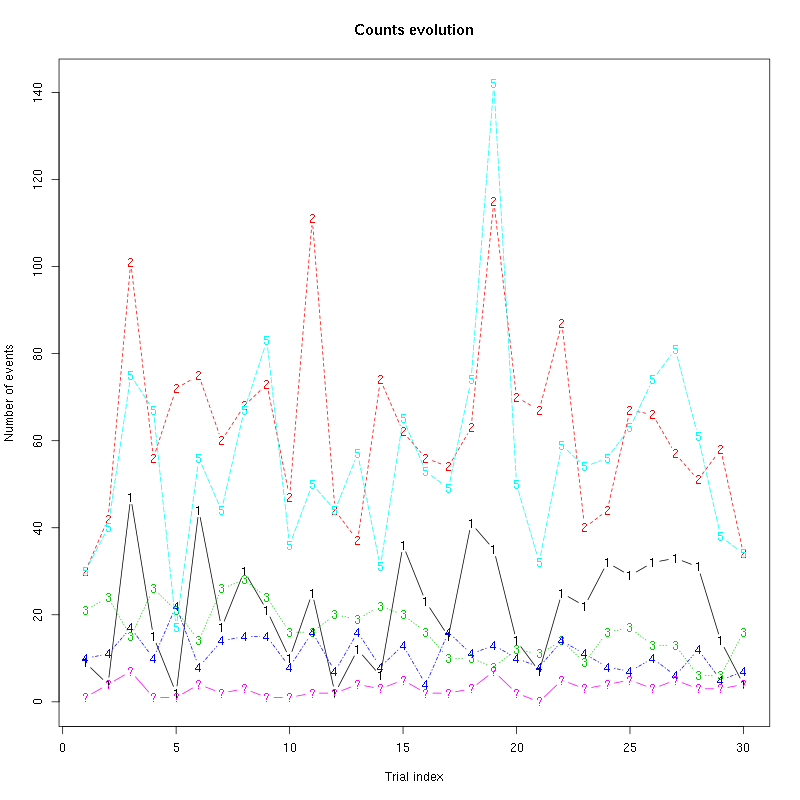
Figure 11: Evolution of the number of events attributed to each unit (1 to 5) or unclassified ("?") during the 30 trials of 1-Hexanol for tetrode D1.
The waveform evolution is:
waveform_evolution(a_1_Hexanol_tetD1,threshold_factor)
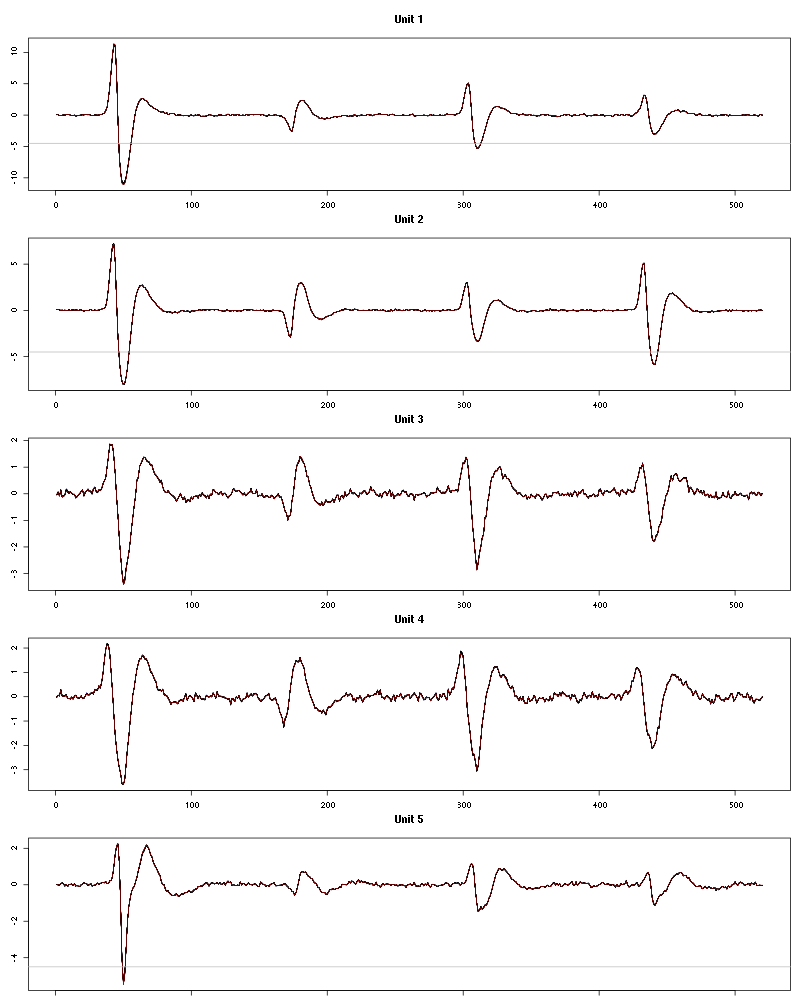
Figure 12: Evolution of the templates of each unit during the 30 trials with 1-Hexanol for tetrode D1.
The observed counting processes, inter spike intervals densities ad raster plots are:
cp_isi_raster(a_1_Hexanol_tetD1)
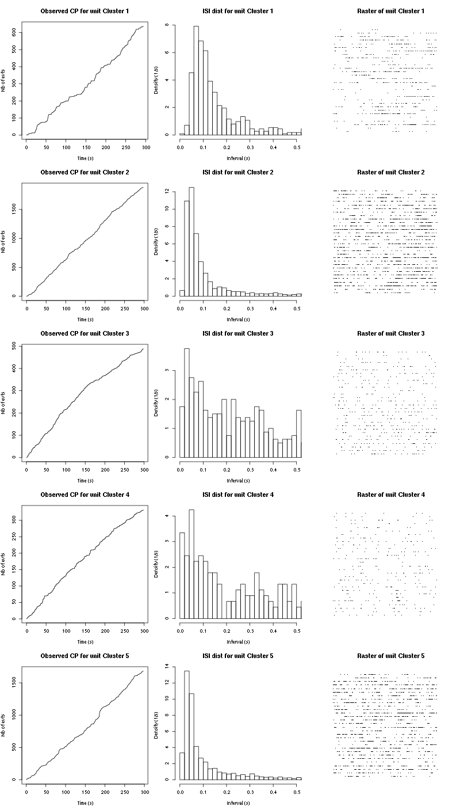
Figure 13: Observed counting processes, empirical inter spike interval distributions and raster plots for 1-Hexanol.
4.3 Save results
Before analyzing the next set of trials we save the output of sort_many_trials to disk with:
save(a_1_Hexanol_tetD1,
file=paste0("tetD1_analysis/tetD1_","1-Hexanol","_summary_obj.rda"))
We write to disk the spike trains in text mode:
for (c_idx in 1:length(a_1_Hexanol_tetD1$spike_trains))
cat(a_1_Hexanol_tetD1$spike_trains[[c_idx]],
file=paste0("locust20000421_spike_trains/locust20000421_1-Hexanol_tetD1_u",c_idx,".txt"),sep="\n")
5 25 trials with Hexanal
We will carry out an analysis of the 25 trials from Hexanal. The LabBook mentions that a drop of solution was added at trial 18 but looking at the data, no major corruption occurs except for a very sharp artifact:
5.1 Do the job
a_Hexanal_tetD1=smt(stim_name="Hexanal",
trial_nbs=1:25,
centers=a_1_Hexanol_tetD1$centers,
counts=a_1_Hexanol_tetD1$counts)
***************
Doing now trial 1 of Hexanal
The five number summary is:
ch09 ch10 ch11 ch12
Min. : 952 Min. :1720 Min. :1508 Min. :1577
1st Qu.:2005 1st Qu.:1992 1st Qu.:2013 1st Qu.:2011
Median :2048 Median :2034 Median :2054 Median :2053
Mean :2047 Mean :2034 Mean :2053 Mean :2053
3rd Qu.:2091 3rd Qu.:2075 3rd Qu.:2094 3rd Qu.:2094
Max. :3175 Max. :2409 Max. :2532 Max. :2480
Global counts at classification's end:
Total Cluster 1 Cluster 2 Cluster 3 Cluster 4 Cluster 5 ?
153 28 26 16 10 65 8
Trial 1 done!
******************
***************
Doing now trial 2 of Hexanal
The five number summary is:
ch09 ch10 ch11 ch12
Min. :1002 Min. :1676 Min. :1638 Min. :1620
1st Qu.:2005 1st Qu.:1993 1st Qu.:2013 1st Qu.:2012
Median :2047 Median :2034 Median :2054 Median :2053
Mean :2047 Mean :2034 Mean :2053 Mean :2053
3rd Qu.:2091 3rd Qu.:2075 3rd Qu.:2093 3rd Qu.:2094
Max. :3158 Max. :2356 Max. :2519 Max. :2438
Global counts at classification's end:
Total Cluster 1 Cluster 2 Cluster 3 Cluster 4 Cluster 5 ?
136 12 23 17 14 66 4
Trial 2 done!
******************
***************
Doing now trial 3 of Hexanal
The five number summary is:
ch09 ch10 ch11 ch12
Min. : 853 Min. :1733 Min. :1582 Min. :1636
1st Qu.:2005 1st Qu.:1993 1st Qu.:2013 1st Qu.:2012
Median :2048 Median :2034 Median :2054 Median :2053
Mean :2047 Mean :2034 Mean :2053 Mean :2053
3rd Qu.:2092 3rd Qu.:2075 3rd Qu.:2094 3rd Qu.:2094
Max. :3201 Max. :2329 Max. :2542 Max. :2449
Global counts at classification's end:
Total Cluster 1 Cluster 2 Cluster 3 Cluster 4 Cluster 5 ?
197 37 18 15 3 116 8
Trial 3 done!
******************
***************
Doing now trial 4 of Hexanal
The five number summary is:
ch09 ch10 ch11 ch12
Min. : 915 Min. :1765 Min. :1522 Min. :1631
1st Qu.:2004 1st Qu.:1992 1st Qu.:2012 1st Qu.:2012
Median :2047 Median :2034 Median :2054 Median :2053
Mean :2047 Mean :2034 Mean :2053 Mean :2053
3rd Qu.:2091 3rd Qu.:2075 3rd Qu.:2094 3rd Qu.:2094
Max. :3148 Max. :2419 Max. :2532 Max. :2486
Global counts at classification's end:
Total Cluster 1 Cluster 2 Cluster 3 Cluster 4 Cluster 5 ?
193 13 18 22 1 137 2
Trial 4 done!
******************
***************
Doing now trial 5 of Hexanal
The five number summary is:
ch09 ch10 ch11 ch12
Min. : 900 Min. :1766 Min. :1574 Min. :1609
1st Qu.:2004 1st Qu.:1993 1st Qu.:2013 1st Qu.:2011
Median :2047 Median :2034 Median :2054 Median :2053
Mean :2047 Mean :2034 Mean :2053 Mean :2053
3rd Qu.:2091 3rd Qu.:2075 3rd Qu.:2093 3rd Qu.:2094
Max. :3135 Max. :2353 Max. :2582 Max. :2429
Global counts at classification's end:
Total Cluster 1 Cluster 2 Cluster 3 Cluster 4 Cluster 5 ?
202 16 30 27 7 114 8
Trial 5 done!
******************
***************
Doing now trial 6 of Hexanal
The five number summary is:
ch09 ch10 ch11 ch12
Min. : 977 Min. :1721 Min. :1507 Min. :1638
1st Qu.:2005 1st Qu.:1993 1st Qu.:2013 1st Qu.:2012
Median :2048 Median :2033 Median :2054 Median :2053
Mean :2047 Mean :2034 Mean :2053 Mean :2053
3rd Qu.:2091 3rd Qu.:2075 3rd Qu.:2093 3rd Qu.:2094
Max. :3176 Max. :2364 Max. :2555 Max. :2458
Global counts at classification's end:
Total Cluster 1 Cluster 2 Cluster 3 Cluster 4 Cluster 5 ?
152 32 34 28 7 41 10
Trial 6 done!
******************
***************
Doing now trial 7 of Hexanal
The five number summary is:
ch09 ch10 ch11 ch12
Min. : 953 Min. :1651 Min. :1592 Min. :1656
1st Qu.:2005 1st Qu.:1993 1st Qu.:2013 1st Qu.:2012
Median :2047 Median :2034 Median :2054 Median :2053
Mean :2047 Mean :2034 Mean :2053 Mean :2052
3rd Qu.:2090 3rd Qu.:2074 3rd Qu.:2093 3rd Qu.:2093
Max. :3114 Max. :2364 Max. :2517 Max. :2497
Global counts at classification's end:
Total Cluster 1 Cluster 2 Cluster 3 Cluster 4 Cluster 5 ?
97 16 13 20 5 42 1
Trial 7 done!
******************
***************
Doing now trial 8 of Hexanal
The five number summary is:
ch09 ch10 ch11 ch12
Min. : 949 Min. :1715 Min. :1541 Min. :1671
1st Qu.:2005 1st Qu.:1993 1st Qu.:2013 1st Qu.:2012
Median :2047 Median :2034 Median :2054 Median :2053
Mean :2047 Mean :2034 Mean :2053 Mean :2052
3rd Qu.:2091 3rd Qu.:2074 3rd Qu.:2093 3rd Qu.:2093
Max. :3172 Max. :2391 Max. :2528 Max. :2438
Global counts at classification's end:
Total Cluster 1 Cluster 2 Cluster 3 Cluster 4 Cluster 5 ?
162 27 20 41 7 58 9
Trial 8 done!
******************
***************
Doing now trial 9 of Hexanal
The five number summary is:
ch09 ch10 ch11 ch12
Min. : 944 Min. :1733 Min. :1582 Min. :1614
1st Qu.:2005 1st Qu.:1993 1st Qu.:2012 1st Qu.:2012
Median :2048 Median :2034 Median :2054 Median :2053
Mean :2047 Mean :2034 Mean :2053 Mean :2052
3rd Qu.:2091 3rd Qu.:2075 3rd Qu.:2093 3rd Qu.:2093
Max. :3125 Max. :2410 Max. :2527 Max. :2420
Global counts at classification's end:
Total Cluster 1 Cluster 2 Cluster 3 Cluster 4 Cluster 5 ?
195 31 22 47 10 79 6
Trial 9 done!
******************
***************
Doing now trial 10 of Hexanal
The five number summary is:
ch09 ch10 ch11 ch12
Min. : 893 Min. :1737 Min. :1567 Min. :1665
1st Qu.:2005 1st Qu.:1993 1st Qu.:2013 1st Qu.:2012
Median :2048 Median :2034 Median :2054 Median :2053
Mean :2047 Mean :2034 Mean :2053 Mean :2052
3rd Qu.:2091 3rd Qu.:2075 3rd Qu.:2093 3rd Qu.:2093
Max. :3199 Max. :2353 Max. :2488 Max. :2409
Global counts at classification's end:
Total Cluster 1 Cluster 2 Cluster 3 Cluster 4 Cluster 5 ?
252 43 8 37 12 146 6
Trial 10 done!
******************
***************
Doing now trial 11 of Hexanal
The five number summary is:
ch09 ch10 ch11 ch12
Min. : 704 Min. :1722 Min. :1508 Min. :1668
1st Qu.:2005 1st Qu.:1993 1st Qu.:2012 1st Qu.:2012
Median :2048 Median :2034 Median :2054 Median :2053
Mean :2047 Mean :2034 Mean :2053 Mean :2052
3rd Qu.:2092 3rd Qu.:2074 3rd Qu.:2094 3rd Qu.:2093
Max. :3138 Max. :2383 Max. :2544 Max. :2446
Global counts at classification's end:
Total Cluster 1 Cluster 2 Cluster 3 Cluster 4 Cluster 5 ?
291 38 12 70 20 139 12
Trial 11 done!
******************
***************
Doing now trial 12 of Hexanal
The five number summary is:
ch09 ch10 ch11 ch12
Min. : 738 Min. :1641 Min. :1546 Min. :1647
1st Qu.:2006 1st Qu.:1993 1st Qu.:2013 1st Qu.:2012
Median :2048 Median :2034 Median :2053 Median :2053
Mean :2047 Mean :2034 Mean :2053 Mean :2052
3rd Qu.:2090 3rd Qu.:2074 3rd Qu.:2093 3rd Qu.:2093
Max. :3191 Max. :2377 Max. :2457 Max. :2461
Global counts at classification's end:
Total Cluster 1 Cluster 2 Cluster 3 Cluster 4 Cluster 5 ?
144 24 7 48 10 51 4
Trial 12 done!
******************
***************
Doing now trial 13 of Hexanal
The five number summary is:
ch09 ch10 ch11 ch12
Min. : 925 Min. :1743 Min. :1571 Min. :1641
1st Qu.:2006 1st Qu.:1993 1st Qu.:2013 1st Qu.:2012
Median :2048 Median :2033 Median :2054 Median :2053
Mean :2047 Mean :2034 Mean :2053 Mean :2052
3rd Qu.:2091 3rd Qu.:2074 3rd Qu.:2093 3rd Qu.:2093
Max. :3114 Max. :2348 Max. :2523 Max. :2418
Global counts at classification's end:
Total Cluster 1 Cluster 2 Cluster 3 Cluster 4 Cluster 5 ?
186 52 5 45 7 69 8
Trial 13 done!
******************
***************
Doing now trial 14 of Hexanal
The five number summary is:
ch09 ch10 ch11 ch12
Min. : 963 Min. :1751 Min. :1516 Min. :1699
1st Qu.:2005 1st Qu.:1994 1st Qu.:2013 1st Qu.:2012
Median :2048 Median :2034 Median :2054 Median :2053
Mean :2047 Mean :2034 Mean :2053 Mean :2052
3rd Qu.:2090 3rd Qu.:2074 3rd Qu.:2093 3rd Qu.:2093
Max. :3147 Max. :2366 Max. :2486 Max. :2401
Global counts at classification's end:
Total Cluster 1 Cluster 2 Cluster 3 Cluster 4 Cluster 5 ?
131 26 5 43 8 46 3
Trial 14 done!
******************
***************
Doing now trial 15 of Hexanal
The five number summary is:
ch09 ch10 ch11 ch12
Min. : 950 Min. :1661 Min. :1571 Min. :1634
1st Qu.:2006 1st Qu.:1994 1st Qu.:2013 1st Qu.:2012
Median :2047 Median :2034 Median :2054 Median :2053
Mean :2047 Mean :2034 Mean :2053 Mean :2052
3rd Qu.:2089 3rd Qu.:2074 3rd Qu.:2093 3rd Qu.:2093
Max. :3158 Max. :2339 Max. :2461 Max. :2428
Global counts at classification's end:
Total Cluster 1 Cluster 2 Cluster 3 Cluster 4 Cluster 5 ?
91 5 5 42 4 31 4
Trial 15 done!
******************
***************
Doing now trial 16 of Hexanal
The five number summary is:
ch09 ch10 ch11 ch12
Min. : 845 Min. :1726 Min. :1520 Min. :1603
1st Qu.:2006 1st Qu.:1994 1st Qu.:2013 1st Qu.:2012
Median :2048 Median :2034 Median :2054 Median :2053
Mean :2047 Mean :2034 Mean :2053 Mean :2052
3rd Qu.:2091 3rd Qu.:2074 3rd Qu.:2093 3rd Qu.:2093
Max. :3186 Max. :2348 Max. :2537 Max. :2393
Global counts at classification's end:
Total Cluster 1 Cluster 2 Cluster 3 Cluster 4 Cluster 5 ?
218 48 2 46 11 99 12
Trial 16 done!
******************
***************
Doing now trial 17 of Hexanal
The five number summary is:
ch09 ch10 ch11 ch12
Min. : 929 Min. :1726 Min. :1585 Min. :1717
1st Qu.:2006 1st Qu.:1994 1st Qu.:2013 1st Qu.:2012
Median :2048 Median :2034 Median :2053 Median :2053
Mean :2047 Mean :2034 Mean :2053 Mean :2052
3rd Qu.:2090 3rd Qu.:2074 3rd Qu.:2093 3rd Qu.:2093
Max. :3120 Max. :2343 Max. :2518 Max. :2409
Global counts at classification's end:
Total Cluster 1 Cluster 2 Cluster 3 Cluster 4 Cluster 5 ?
137 29 2 28 11 64 3
Trial 17 done!
******************
***************
Doing now trial 18 of Hexanal
The five number summary is:
ch09 ch10 ch11 ch12
Min. : 711 Min. :1084 Min. :1528 Min. :1490
1st Qu.:2005 1st Qu.:1994 1st Qu.:2013 1st Qu.:2012
Median :2048 Median :2034 Median :2053 Median :2053
Mean :2047 Mean :2034 Mean :2053 Mean :2052
3rd Qu.:2091 3rd Qu.:2074 3rd Qu.:2093 3rd Qu.:2093
Max. :3652 Max. :2586 Max. :2948 Max. :2861
Global counts at classification's end:
Total Cluster 1 Cluster 2 Cluster 3 Cluster 4 Cluster 5 ?
217 43 1 54 19 88 12
Trial 18 done!
******************
***************
Doing now trial 19 of Hexanal
The five number summary is:
ch09 ch10 ch11 ch12
Min. : 658 Min. :1717 Min. :1564 Min. :1672
1st Qu.:2006 1st Qu.:1994 1st Qu.:2013 1st Qu.:2012
Median :2048 Median :2034 Median :2054 Median :2053
Mean :2047 Mean :2034 Mean :2053 Mean :2052
3rd Qu.:2090 3rd Qu.:2074 3rd Qu.:2093 3rd Qu.:2093
Max. :3131 Max. :2331 Max. :2536 Max. :2401
Global counts at classification's end:
Total Cluster 1 Cluster 2 Cluster 3 Cluster 4 Cluster 5 ?
193 41 3 36 12 88 13
Trial 19 done!
******************
***************
Doing now trial 20 of Hexanal
The five number summary is:
ch09 ch10 ch11 ch12
Min. : 943 Min. :1743 Min. :1565 Min. :1674
1st Qu.:2006 1st Qu.:1994 1st Qu.:2013 1st Qu.:2012
Median :2048 Median :2034 Median :2053 Median :2053
Mean :2047 Mean :2034 Mean :2053 Mean :2052
3rd Qu.:2089 3rd Qu.:2074 3rd Qu.:2092 3rd Qu.:2093
Max. :3117 Max. :2413 Max. :2524 Max. :2453
Global counts at classification's end:
Total Cluster 1 Cluster 2 Cluster 3 Cluster 4 Cluster 5 ?
140 29 0 40 11 54 6
Trial 20 done!
******************
***************
Doing now trial 21 of Hexanal
The five number summary is:
ch09 ch10 ch11 ch12
Min. : 912 Min. :1718 Min. :1598 Min. :1659
1st Qu.:2006 1st Qu.:1994 1st Qu.:2013 1st Qu.:2012
Median :2047 Median :2034 Median :2053 Median :2053
Mean :2047 Mean :2034 Mean :2053 Mean :2052
3rd Qu.:2089 3rd Qu.:2074 3rd Qu.:2093 3rd Qu.:2093
Max. :3140 Max. :2364 Max. :2498 Max. :2395
Global counts at classification's end:
Total Cluster 1 Cluster 2 Cluster 3 Cluster 4 Cluster 5 ?
136 19 4 34 7 59 13
Trial 21 done!
******************
***************
Doing now trial 22 of Hexanal
The five number summary is:
ch09 ch10 ch11 ch12
Min. : 703 Min. :1717 Min. :1508 Min. :1643
1st Qu.:2006 1st Qu.:1994 1st Qu.:2013 1st Qu.:2012
Median :2048 Median :2034 Median :2053 Median :2053
Mean :2047 Mean :2034 Mean :2053 Mean :2052
3rd Qu.:2090 3rd Qu.:2074 3rd Qu.:2093 3rd Qu.:2093
Max. :3158 Max. :2358 Max. :2539 Max. :2423
Global counts at classification's end:
Total Cluster 1 Cluster 2 Cluster 3 Cluster 4 Cluster 5 ?
206 49 1 49 13 87 7
Trial 22 done!
******************
***************
Doing now trial 23 of Hexanal
The five number summary is:
ch09 ch10 ch11 ch12
Min. : 940 Min. :1759 Min. :1632 Min. :1637
1st Qu.:2006 1st Qu.:1994 1st Qu.:2013 1st Qu.:2012
Median :2047 Median :2034 Median :2053 Median :2053
Mean :2047 Mean :2034 Mean :2053 Mean :2052
3rd Qu.:2090 3rd Qu.:2074 3rd Qu.:2092 3rd Qu.:2093
Max. :3222 Max. :2376 Max. :2506 Max. :2414
Global counts at classification's end:
Total Cluster 1 Cluster 2 Cluster 3 Cluster 4 Cluster 5 ?
143 17 0 39 8 77 2
Trial 23 done!
******************
***************
Doing now trial 24 of Hexanal
The five number summary is:
ch09 ch10 ch11 ch12
Min. : 906 Min. :1740 Min. :1512 Min. :1720
1st Qu.:2006 1st Qu.:1994 1st Qu.:2013 1st Qu.:2012
Median :2048 Median :2034 Median :2054 Median :2053
Mean :2047 Mean :2034 Mean :2053 Mean :2052
3rd Qu.:2090 3rd Qu.:2074 3rd Qu.:2093 3rd Qu.:2093
Max. :3140 Max. :2405 Max. :2512 Max. :2428
Global counts at classification's end:
Total Cluster 1 Cluster 2 Cluster 3 Cluster 4 Cluster 5 ?
166 29 2 36 7 85 7
Trial 24 done!
******************
***************
Doing now trial 25 of Hexanal
The five number summary is:
ch09 ch10 ch11 ch12
Min. : 890 Min. :1695 Min. :1557 Min. :1653
1st Qu.:2005 1st Qu.:1994 1st Qu.:2013 1st Qu.:2012
Median :2048 Median :2034 Median :2054 Median :2053
Mean :2047 Mean :2034 Mean :2053 Mean :2052
3rd Qu.:2091 3rd Qu.:2074 3rd Qu.:2093 3rd Qu.:2093
Max. :3177 Max. :2402 Max. :2517 Max. :2448
Global counts at classification's end:
Total Cluster 1 Cluster 2 Cluster 3 Cluster 4 Cluster 5 ?
186 40 1 29 11 101 4
Trial 25 done!
******************
5.2 Diagnostic plots
The counts evolution is:
counts_evolution(a_Hexanal_tetD1)
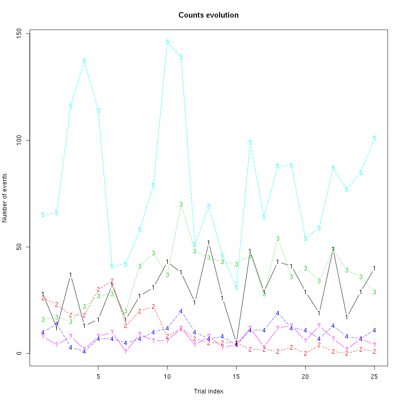
Figure 14: Evolution of the number of events attributed to each unit (1 to 5) or unclassified ("?") during the 25 trials of Hexanal for tetrode D1.
The waveform evolution is:
waveform_evolution(a_Hexanal_tetD1,threshold_factor)
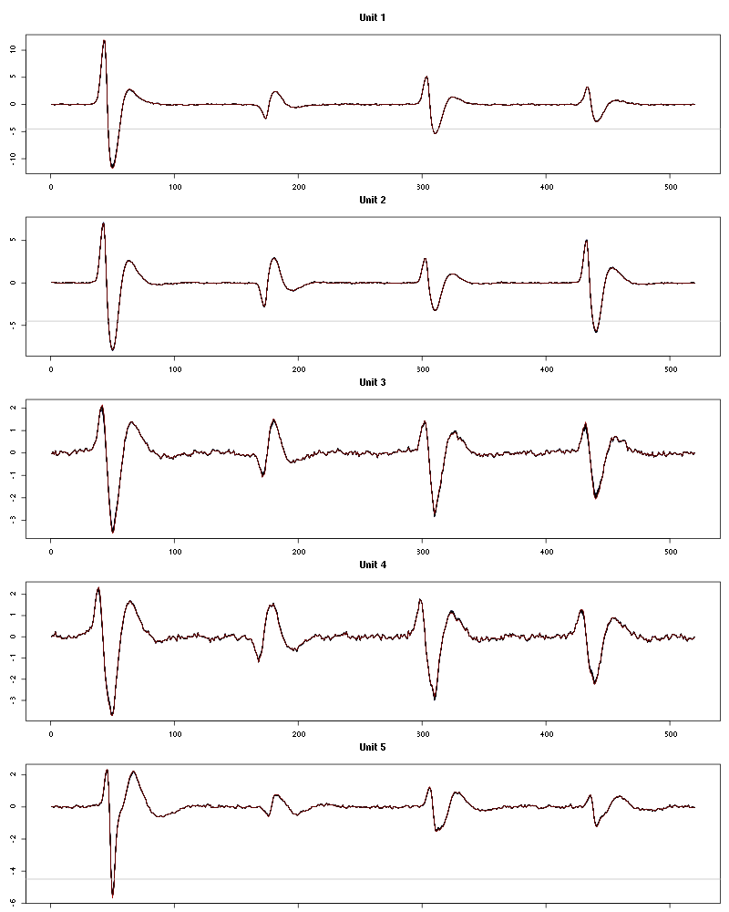
Figure 15: Evolution of the templates of each unit during the 25 trials of Hexanal for tetrode D1.
The observed counting processes, inter spike intervals densities and raster plots are:
cp_isi_raster(a_Hexanal_tetD1)
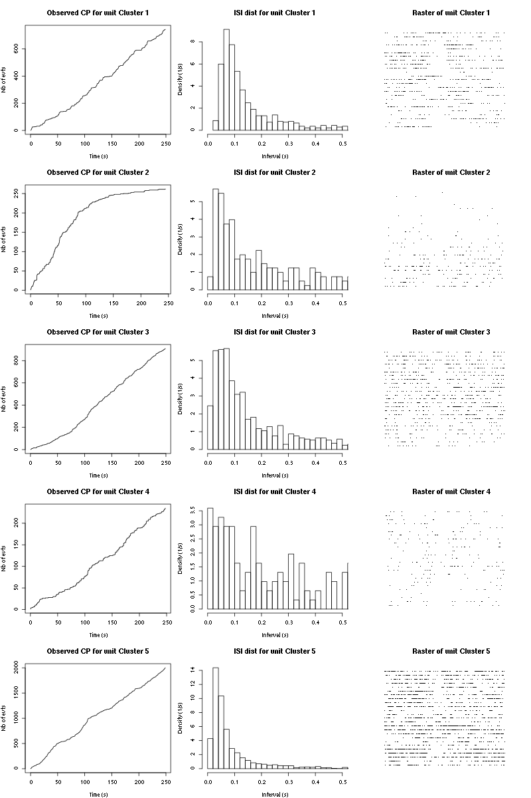
Figure 16: Observed counting processes, empirical inter spike interval distributions and raster plots for Hexanal.
5.3 Save results
Before analyzing the next set of trials we save the output of sort_many_trials to disk with:
save(a_Hexanal_tetD1,
file=paste0("tetD1_analysis/tetD1_","Hexanal","_summary_obj.rda"))
We write to disk the spike trains in text mode:
for (c_idx in 1:length(a_Hexanal_tetD1$spike_trains))
cat(a_Hexanal_tetD1$spike_trains[[c_idx]],
file=paste0("locust20000421_spike_trains/locust20000421_Hexanal_tetD1_u",c_idx,".txt"),sep="\n")
6 25 trials with Cis-3-Hexen-1-ol
We will carry out an analysis of the 25 trials from Cis-3-Hexen-1-ol.
6.1 Do the job
We do not print out the output to save space.
a_Cis_3_Hexen_1_ol_tetD1=smt(stim_name="Cis-3-Hexen-1-ol",
trial_nbs=1:25,
centers=a_Hexanal_tetD1$centers,
counts=a_Hexanal_tetD1$counts)
6.2 Diagnostic plots
The counts evolution is:
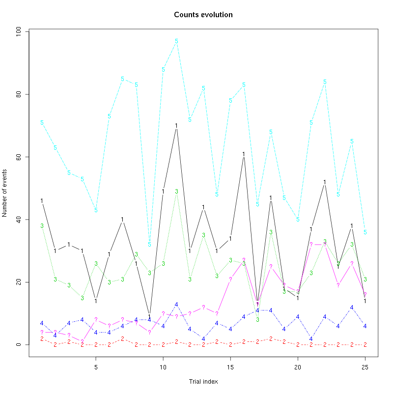
Figure 17: Evolution of the number of events attributed to each unit (1 to 5) or unclassified ("?") during the 30 trials of Cis-3-Hexen-1-ol for tetrode D1.
The waveform evolution is:
waveform_evolution(a_Cis_3_Hexen_1_ol_tetD1,threshold_factor)

Figure 18: Evolution of the templates of each unit during the 25 trials of Cis-3-Hexen-1-ol for stereode Ca.
The observed counting processes, inter spike intervals densities and raster plots are:
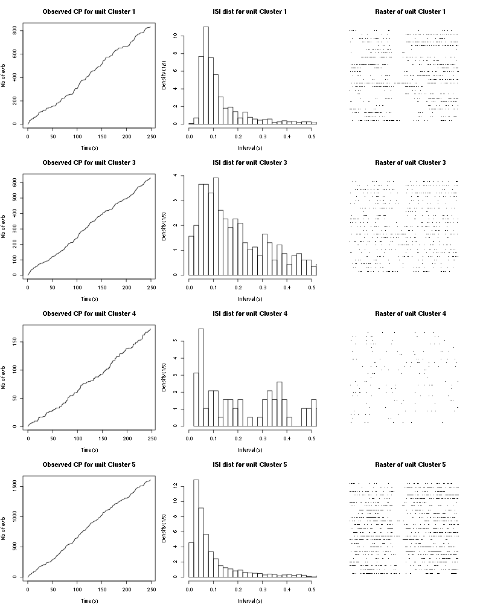
Figure 19: Observed counting processes, empirical inter spike interval distributions and raster plots for Cis-3-Hexen-1-ol.
6.3 Save results
Before analyzing the next set of trials we save the output of sort_many_trials to disk with:
save(a_Cis_3_Hexen_1_ol_tetD1,
file=paste0("tetD1_analysis/tetD1_","Cis-3-Hexen-1-ol","_summary_obj.rda"))
We write to disk the spike trains in text mode:
for (c_idx in 1:length(a_Cis_3_Hexen_1_ol_tetD1$spike_trains))
if (!is.null(a_Cis_3_Hexen_1_ol_tetD1$spike_trains[[c_idx]]))
cat(a_Cis_3_Hexen_1_ol_tetD1$spike_trains[[c_idx]],
file=paste0("locust20000421_spike_trains/locust20000421_Cis-3-Hexen-1-ol_tetD1_u",c_idx,".txt"),sep="\n")
7 25 trials with Trans-2-Hexen-1-ol
We will carry out an analysis of the 25 trials from Trans-2-Hexen-1-ol.
7.1 Do the job
stim_name = "Trans-2-Hexen-1-ol"
a_Trans_2_Hexen_1_ol_tetD1=smt(stim_name=stim_name,
trial_nbs=1:25,
centers=a_Cis_3_Hexen_1_ol_tetD1$centers,
counts=a_Cis_3_Hexen_1_ol_tetD1$counts)
7.2 Diagnostic plots
The counts evolution is:
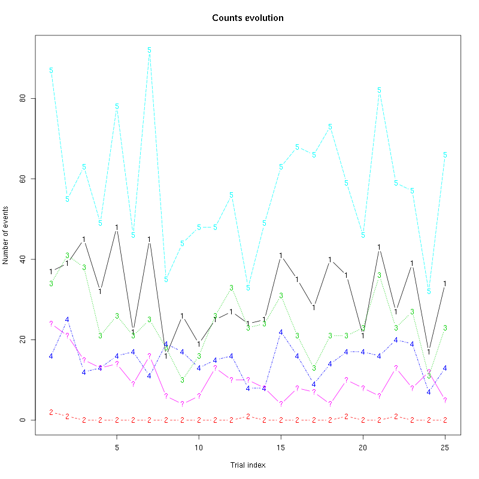
Figure 20: Evolution of the number of events attributed to each unit (1 to 5) or unclassified ("?") during the 25 trials of Trans-2-Hexen-1-ol for tetrodeD1.
The waveform evolution is:
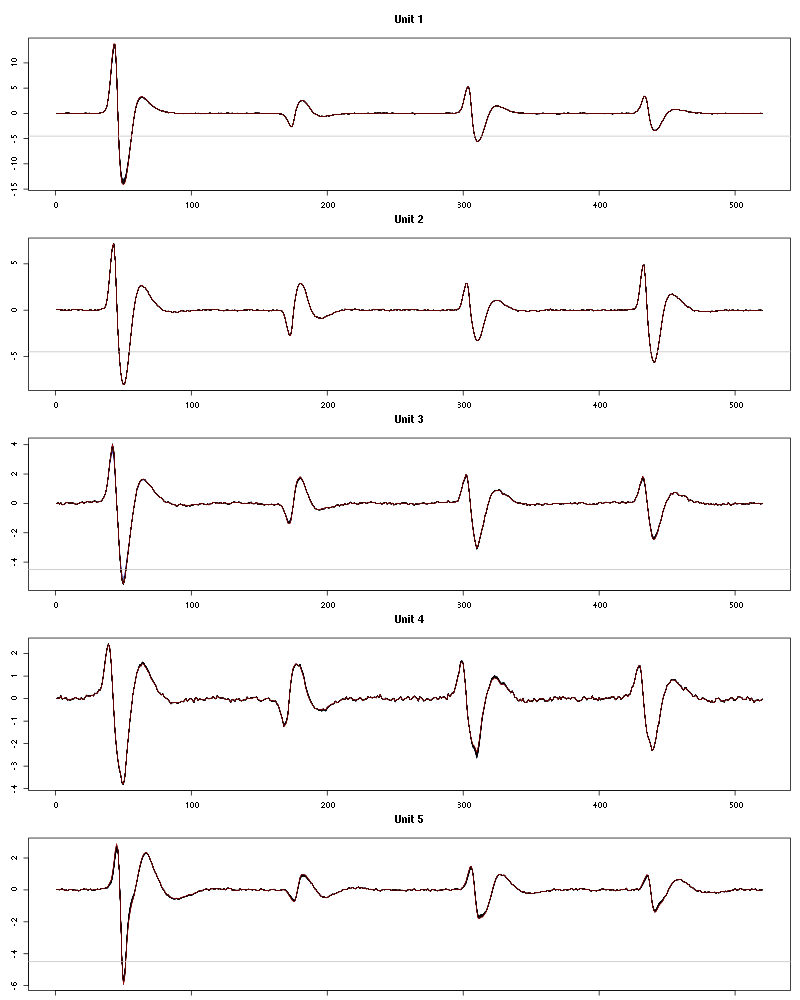
Figure 21: Evolution of the templates of each unit during the 25 trials of Trans-2-Hexen-1-ol for tetrodeD1.
The observed counting processes, inter spike intervals densities and raster plots are:
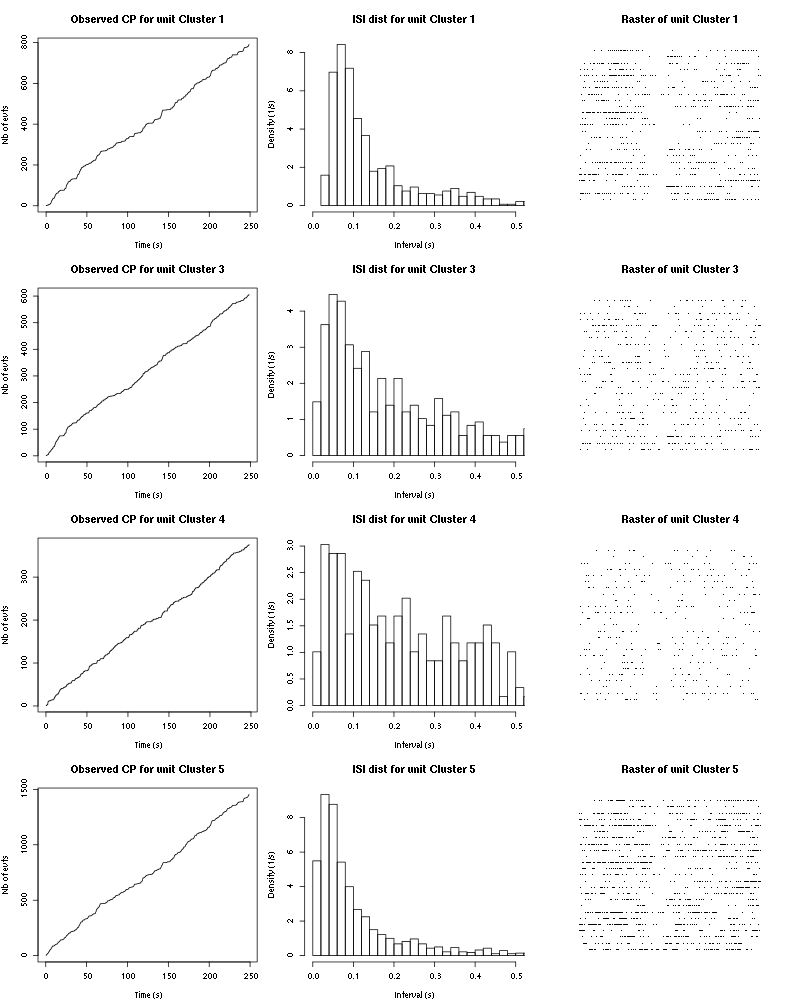
Figure 22: Observed counting processes, empirical inter spike interval distributions and raster plots for Trans-2-Hexen-1-ol.
7.3 Save results
Before analyzing the next set of trials we save the output of sort_many_trials to disk with:
save(a_Trans_2_Hexen_1_ol_tetD1,
file=paste0("tetD1_analysis/tetD1_",stim_name,"_summary_obj.rda"))
We write to disk the spike trains in text mode:
for (c_idx in 1:length(a_Trans_2_Hexen_1_ol_tetD1$spike_trains))
if (!is.null(a_Trans_2_Hexen_1_ol_tetD1$spike_trains[[c_idx]]))
cat(a_Trans_2_Hexen_1_ol_tetD1$spike_trains[[c_idx]],
file=paste0("locust20000421_spike_trains/locust20000421_Trans-2-Hexen-1-ol_tetD1_u",
c_idx,".txt"),sep="\n")
8 25 trials with 1-Hexen-3-ol
We will carry out an analysis of the 25 trials from 1-Hexen-3-ol.
8.1 Do the job
stim_name = "1-Hexen-3-ol"
a_1_Hexen_3_ol_tetD1=smt(stim_name=stim_name,
trial_nbs=1:25,
centers=a_Trans_2_Hexen_1_ol_tetD1$centers,
counts=a_Trans_2_Hexen_1_ol_tetD1$counts)
8.2 Diagnostic plots
The counts evolution is:
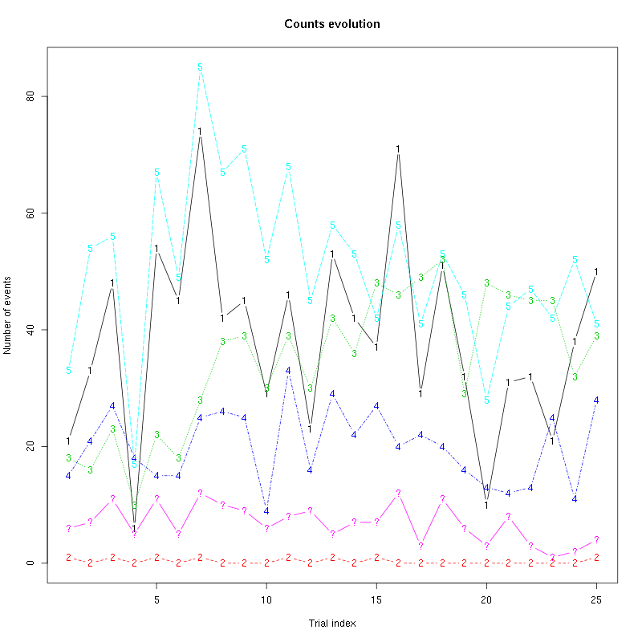
Figure 23: Evolution of the number of events attributed to each unit (1 to 5) or unclassified ("?") during the 25 trials of 1-Hexen-3-ol for tetrodeD1.
The waveform evolution is:
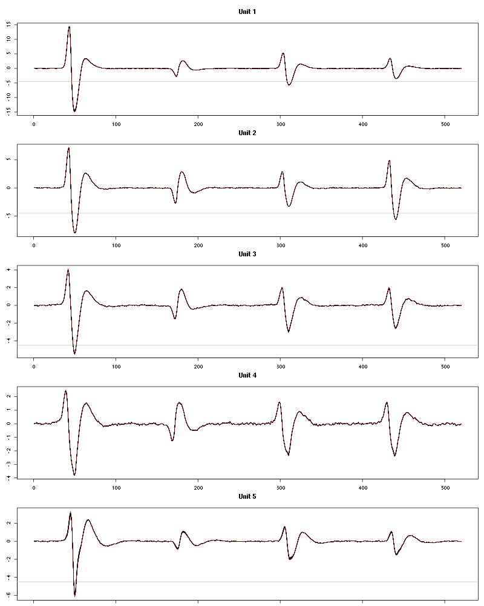
Figure 24: Evolution of the templates of each unit during the 25 trials of 1-Hexen-3-ol for tetrodeD1.
The observed counting processes, inter spike intervals densities and raster plots are:
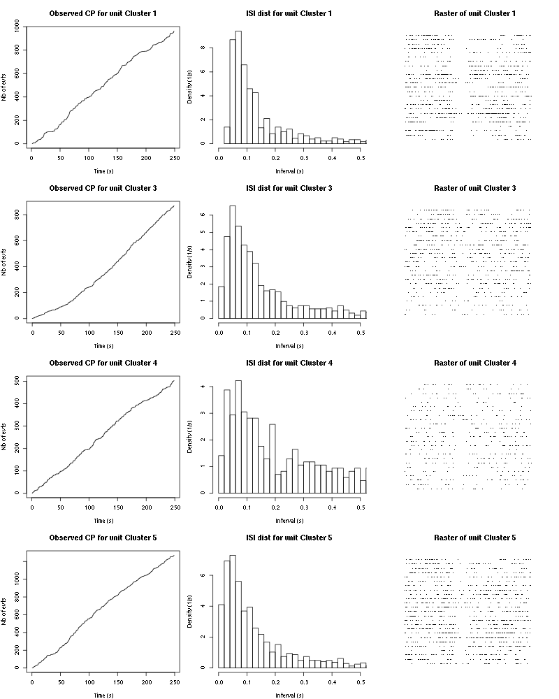
Figure 25: Observed counting processes, empirical inter spike interval distributions and raster plots for 1-Hexen-3-ol.
8.3 Save results
Before analyzing the next set of trials we save the output of sort_many_trials to disk with:
save(a_1_Hexen_3_ol_tetD1,
file=paste0("tetD1_analysis/tetD1_",stim_name,"_summary_obj.rda"))
We write to disk the spike trains in text mode:
for (c_idx in 1:length(a_1_Hexen_3_ol_tetD1$spike_trains))
if (!is.null(a_1_Hexen_3_ol_tetD1$spike_trains[[c_idx]]))
cat(a_1_Hexen_3_ol_tetD1$spike_trains[[c_idx]],
file=paste0("locust20000421_spike_trains/locust20000421_1-Hexen-3-ol_tetD1_u",
c_idx,".txt"),sep="\n")
9 25 trials with 3-Pentanone
We will carry out an analysis of the 25 trials from 3-Pentanone.
9.1 Do the job
stim_name = "3-Pentanone"
a_3_Pentanone_tetD1=smt(stim_name=stim_name,
trial_nbs=1:25,
centers=a_1_Hexen_3_ol_tetD1$centers,
counts=a_1_Hexen_3_ol_tetD1$counts)
9.2 Diagnostic plots
The counts evolution is:
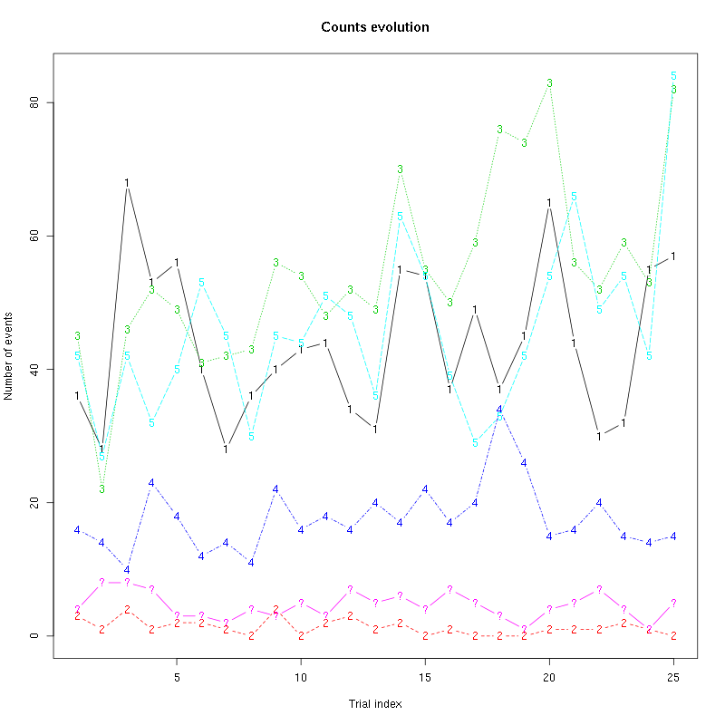
Figure 26: Evolution of the number of events attributed to each unit (1 to 5) or unclassified ("?") during the 25 trials of 3-Pentanone for tetrodeD1.
The waveform evolution is:
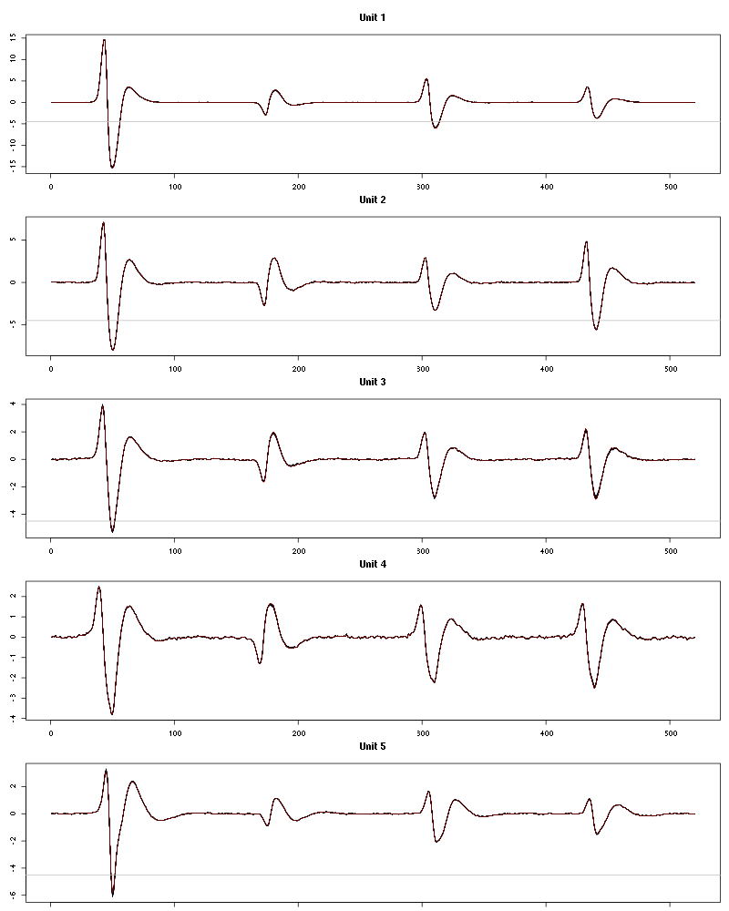
Figure 27: Evolution of the templates of each of the first four units during the 25 trials of 3-Pentanone for tetrodeD1.
The observed counting processes, inter spike intervals densities and raster plots are:
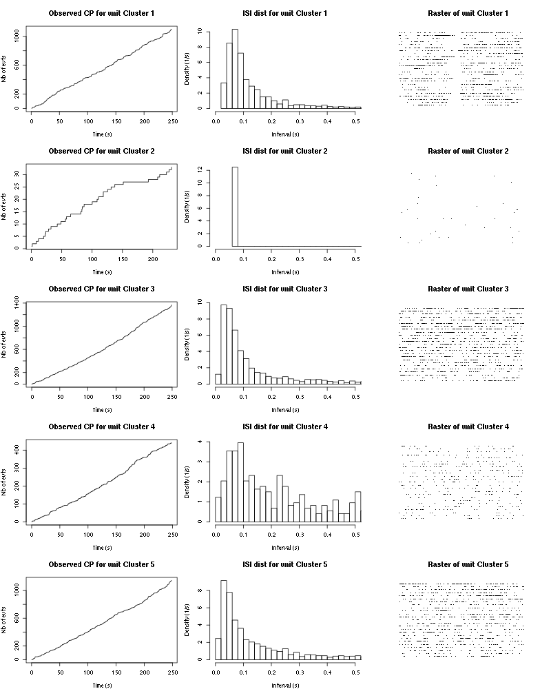
Figure 28: Observed counting processes, empirical inter spike interval distributions and raster plots for 3-Pentanone.
9.3 Save results
Before analyzing the next set of trials we save the output of sort_many_trials to disk with:
save(a_3_Pentanone_tetD1,
file=paste0("tetD1_analysis/tetD1_",stim_name,"_summary_obj.rda"))
We write to disk the spike trains in text mode:
for (c_idx in 1:length(a_3_Pentanone_tetD1$spike_trains))
if (!is.null(a_3_Pentanone_tetD1$spike_trains[[c_idx]]))
cat(a_3_Pentanone_tetD1$spike_trains[[c_idx]],
file=paste0("locust20000421_spike_trains/locust20000421_3-Pentanone_tetD1_u",
c_idx,".txt"),sep="\n")
10 25 trials with 1-Heptanol
We will carry out an analysis of the 25 trials from 1-Heptanol.
10.1 Do the job
stim_name = "1-Heptanol"
a_1_Heptanol_tetD1=smt(stim_name=stim_name,
trial_nbs=1:25,
centers=a_3_Pentanone_tetD1$centers,
counts=a_3_Pentanone_tetD1$counts)
10.2 Diagnostic plots
The counts evolution is:
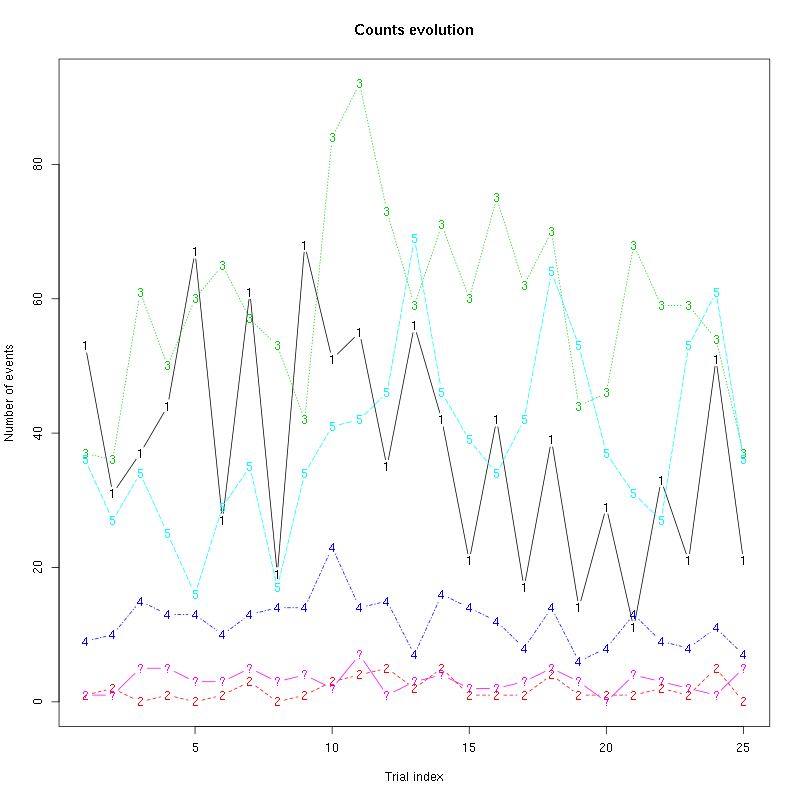
Figure 29: Evolution of the number of events attributed to each unit (1 to 5) or unclassified ("?") during the 25 trials of 1-Heptanol for tetrodeD1.
The waveform evolution is:
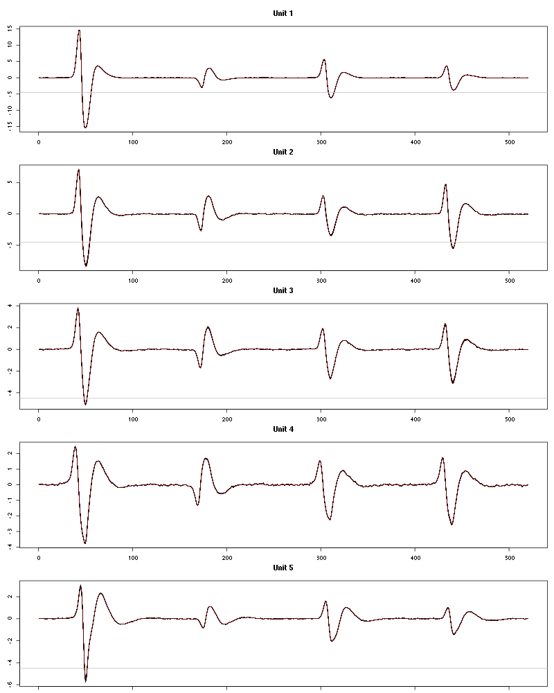
Figure 30: Evolution of the templates of each of the first four units during the 25 trials of 1-Heptanol for tetrodeD1.
The observed counting processes, inter spike intervals densities and raster plots are:
cp_isi_raster(a_1_Heptanol_tetD1)
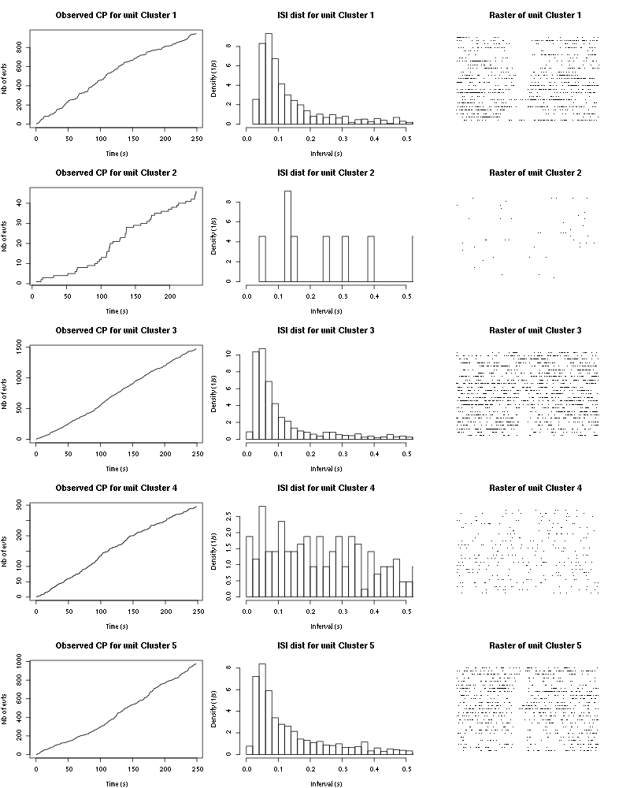
Figure 31: Observed counting processes, empirical inter spike interval distributions and raster plots for 1-Heptanol.
10.3 Save results
Before analyzing the next set of trials we save the output of sort_many_trials to disk with:
save(a_1_Heptanol_tetD1,
file=paste0("tetD1_analysis/tetD1_",stim_name,"_summary_obj.rda"))
We write to disk the spike trains in text mode:
for (c_idx in 1:length(a_1_Heptanol_tetD1$spike_trains))
if (!is.null(a_1_Heptanol_tetD1$spike_trains[[c_idx]]))
cat(a_1_Heptanol_tetD1$spike_trains[[c_idx]],
file=paste0("locust20000421_spike_trains/locust20000421_1-Heptanol_tetD1_u",
c_idx,".txt"),sep="\n")
11 25 trials with 1-Octanol (10^-0) first
We will carry out an analysis of the 25 trials from 1-Octanol (10^-0) first.
11.1 Do the job
stim_name = "1-Octanol (10^-0) first"
a_1_Octanol_0_tetD1=smt(stim_name=stim_name,
trial_nbs=1:25,
centers=a_1_Heptanol_tetD1$centers,
counts=a_1_Heptanol_tetD1$counts)
11.2 Diagnostic plots
The counts evolution is:
 first-count-evolution-tetD1.png)
Figure 32: Evolution of the number of events attributed to each unit (1 to 5) or unclassified ("?") during the 25 trials of 1-Octanol (10^-0) first for tetrodeD1.
The waveform evolution is:
 first-waveform-evolution-tetD1.png)
Figure 33: Evolution of the templates of each of the first four units during the 25 trials of 1-Octanol (10^-0) first for tetrodeD1.
The observed counting processes, inter spike intervals densities and raster plots are:
cp_isi_raster(a_1_Octanol_0_tetD1)
 first-CP-and-ISI-dist-tetD1.png)
Figure 34: Observed counting processes, empirical inter spike interval distributions and raster plots for 1-Octanol (10^-0) first.
11.3 Save results
Before analyzing the next set of trials we save the output of sort_many_trials to disk with:
save(a_1_Octanol_0_tetD1,
file=paste0("tetD1_analysis/tetD1_",stim_name,"_summary_obj.rda"))
We write to disk the spike trains in text mode:
for (c_idx in 1:length(a_1_Octanol_0_tetD1$spike_trains))
if (!is.null(a_1_Octanol_0_tetD1$spike_trains[[c_idx]]))
cat(a_1_Octanol_0_tetD1$spike_trains[[c_idx]],
file=paste0("locust20000421_spike_trains/locust20000421_1-Octanol (10^-0) first_tetD1_u",
c_idx,".txt"),sep="\n")
12 25 trials with 2-Heptanone
We will carry out an analysis of the 25 trials from 2-Heptanone.
12.1 Do the job
stim_name = "2-Heptanone"
a_2_Heptanone_tetD1=smt(stim_name=stim_name,
trial_nbs=1:25,
centers=a_1_Octanol_0_tetD1$centers,
counts=a_1_Octanol_0_tetD1$counts)
12.2 Diagnostic plots
The counts evolution is:
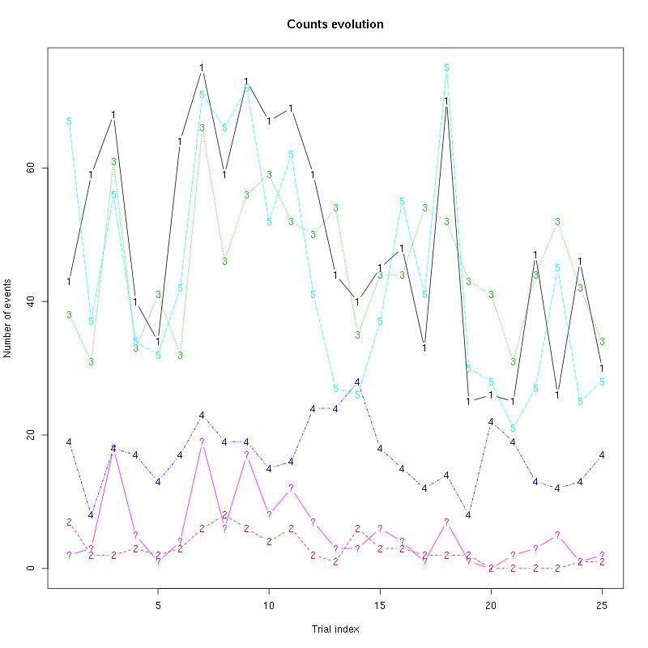
Figure 35: Evolution of the number of events attributed to each unit (1 to 5) or unclassified ("?") during the 25 trials of 2-Heptanone for tetrodeD1.
The waveform evolution is:
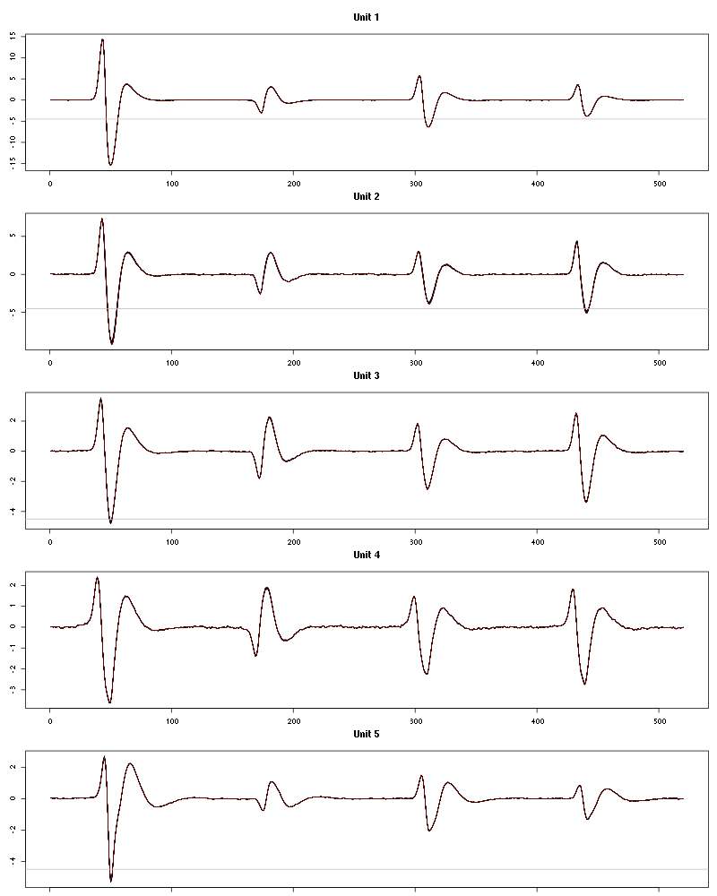
Figure 36: Evolution of the templates of each unit during the 25 trials of 2-Heptanone for tetrodeD1.
The observed counting processes, inter spike intervals densities and raster plots are:
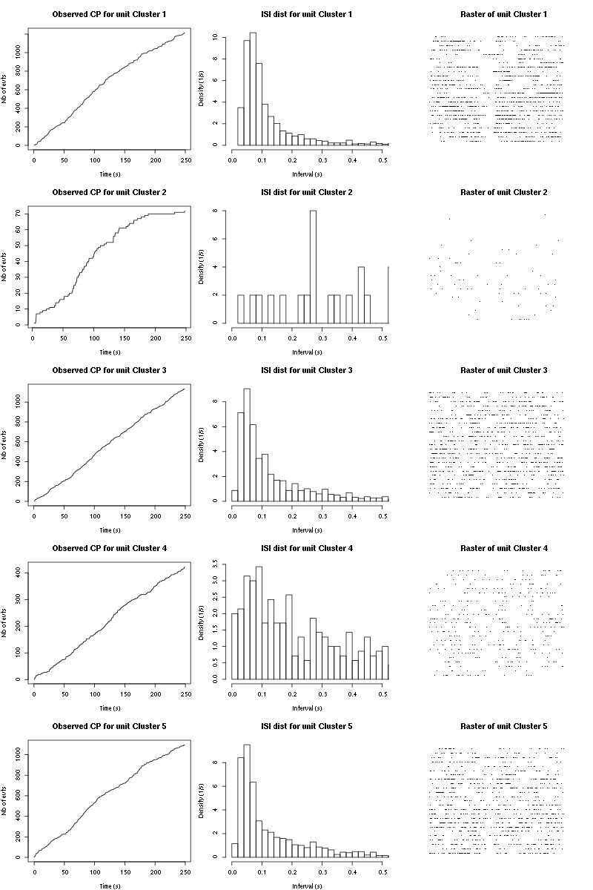
Figure 37: Observed counting processes, empirical inter spike interval distributions and raster plots for 2-Heptanone.
12.3 Save results
Before analyzing the next set of trials we save the output of sort_many_trials to disk with:
save(a_2_Heptanone_tetD1,
file=paste0("tetD1_analysis/tetD1_",stim_name,"_summary_obj.rda"))
We write to disk the spike trains in text mode:
for (c_idx in 1:length(a_2_Heptanone_tetD1$spike_trains))
if (!is.null(a_2_Heptanone_tetD1$spike_trains[[c_idx]]))
cat(a_2_Heptanone_tetD1$spike_trains[[c_idx]],file=paste0("locust20000421_spike_trains/locust20000421_2-Heptanone_tetD1_u",c_idx,".txt"),sep="\n")
13 25 trials with 3-Heptanone
We will carry out an analysis of the 25 trials from 3-Heptanone.
13.1 Do the job
stim_name = "3-Heptanone"
a_3_Heptanone_tetD1=smt(stim_name=stim_name,
trial_nbs=1:25,
centers=a_2_Heptanone_tetD1$centers,
counts=a_2_Heptanone_tetD1$counts)
13.2 Diagnostic plots
The counts evolution is:
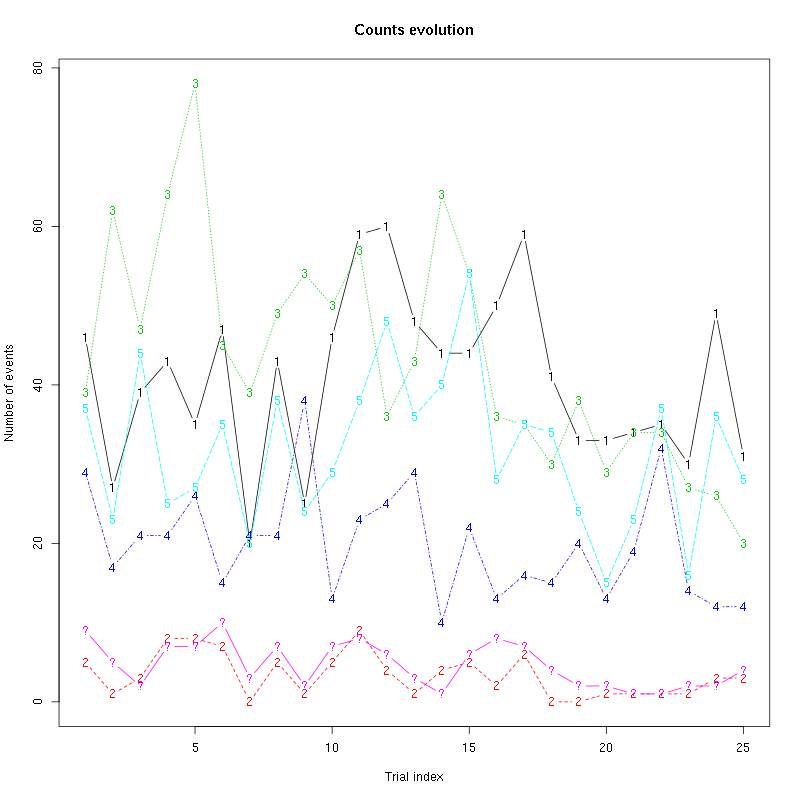
Figure 38: Evolution of the number of events attributed to each unit (1 to 5) or unclassified ("?") during the 25 trials of 3-Heptanone for tetrodeD1.
The waveform evolution is:
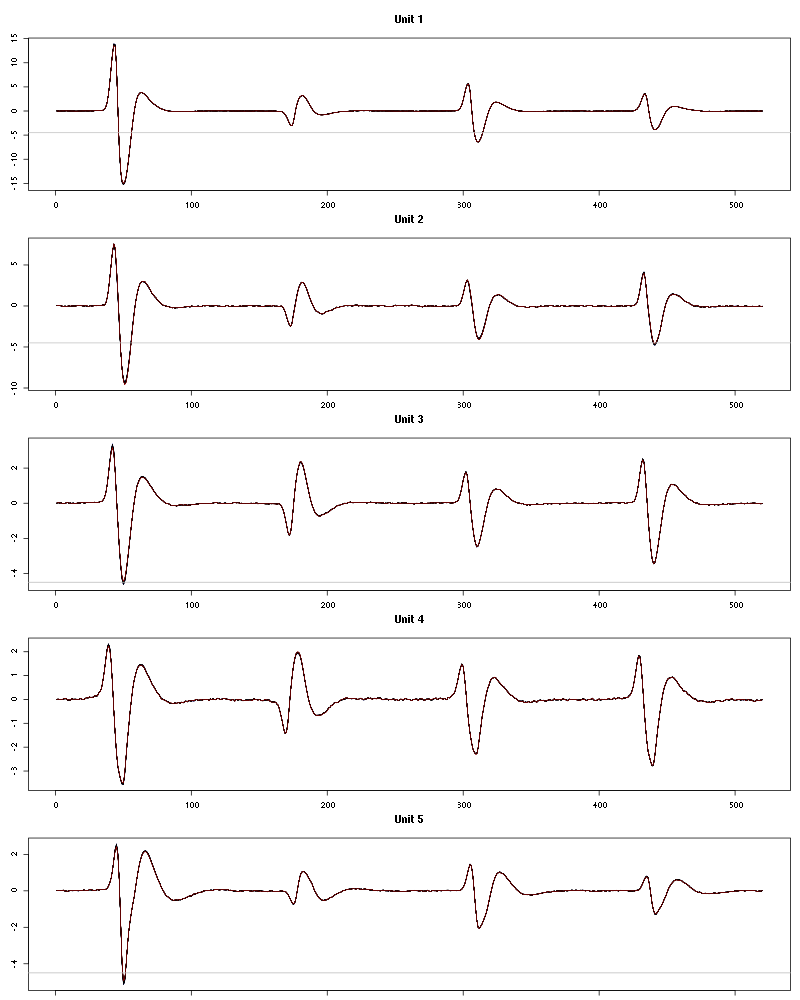
Figure 39: Evolution of the templates of each unit during the 25 trials of 3-Heptanone for tetrodeD1.
The observed counting processes, inter spike intervals densities and raster plots are:
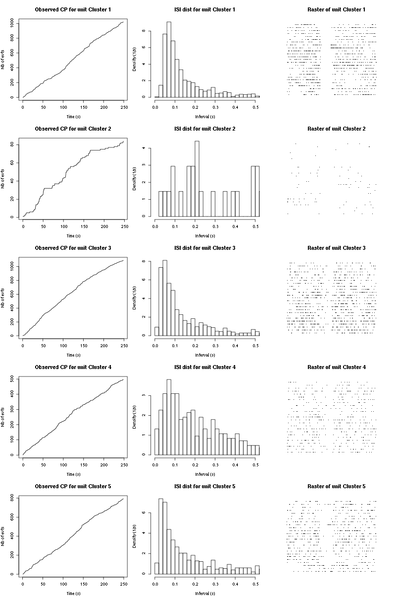
Figure 40: Observed counting processes, empirical inter spike interval distributions and raster plots for 3-Heptanone.
13.3 Save results
Before analyzing the next set of trials we save the output of sort_many_trials to disk with:
save(a_3_Heptanone_tetD1,
file=paste0("tetD1_analysis/tetD1_",stim_name,"_summary_obj.rda"))
We write to disk the spike trains in text mode:
for (c_idx in 1:length(a_3_Heptanone_tetD1$spike_trains))
if (!is.null(a_3_Heptanone_tetD1$spike_trains[[c_idx]]))
cat(a_3_Heptanone_tetD1$spike_trains[[c_idx]],file=paste0("locust20000421_spike_trains/locust20000421_3-Heptanone_tetD1_u",c_idx,".txt"),sep="\n")
14 25 trials with Citral
We will carry out an analysis of the 25 trials from Citral.
14.1 Do the job
stim_name = "Citral"
a_Citral_tetD1=smt(stim_name=stim_name,
trial_nbs=1:25,
centers=a_3_Heptanone_tetD1$centers,
counts=a_3_Heptanone_tetD1$counts)
14.2 Diagnostic plots
The counts evolution is:
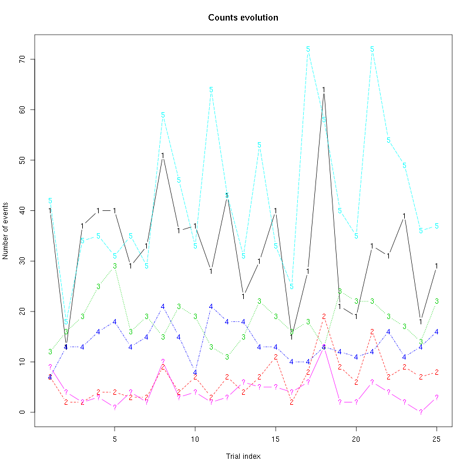
Figure 41: Evolution of the number of events attributed to each unit (1 to 5) or unclassified ("?") during the 25 trials of Citral for tetrodeD1.
The waveform evolution is:
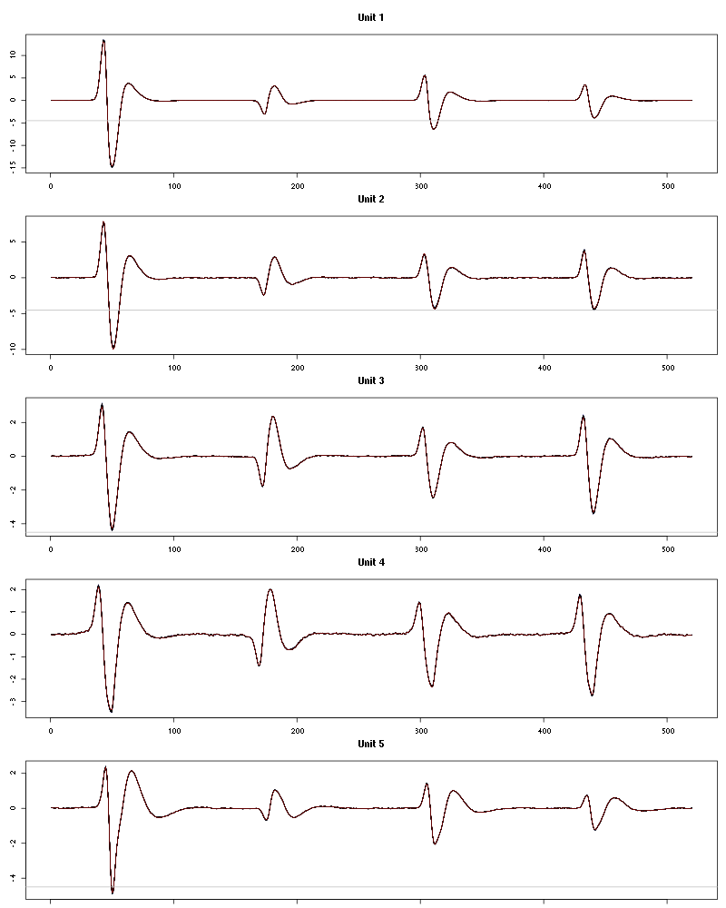
Figure 42: Evolution of the templates of each unit during the 25 trials of Citral for tetrodeD1.
The observed counting processes, inter spike intervals densities and raster plots are:
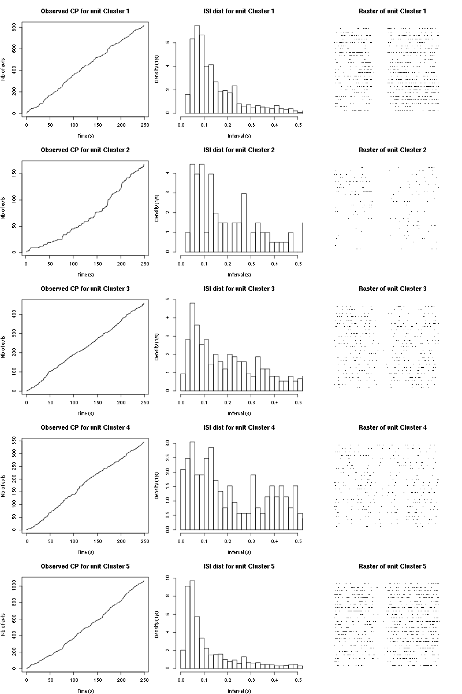
Figure 43: Observed counting processes, empirical inter spike interval distributions and raster plots for Citral.
14.3 Save results
Before analyzing the next set of trials we save the output of sort_many_trials to disk with:
save(a_Citral_tetD1,
file=paste0("tetD1_analysis/tetD1_",stim_name,"_summary_obj.rda"))
We write to disk the spike trains in text mode:
for (c_idx in 1:length(a_Citral_tetD1$spike_trains))
if (!is.null(a_Citral_tetD1$spike_trains[[c_idx]]))
cat(a_Citral_tetD1$spike_trains[[c_idx]],file=paste0("locust20000421_spike_trains/locust20000421_Citral_tetD1_u",c_idx,".txt"),sep="\n")
15 25 trials with Apple
We will carry out an analysis of the 25 trials from Apple.
15.1 Do the job
stim_name = "Apple"
a_Apple_tetD1=smt(stim_name=stim_name,
trial_nbs=1:25,
centers=a_Citral_tetD1$centers,
counts=a_Citral_tetD1$counts)
15.2 Diagnostic plots
The counts evolution is:
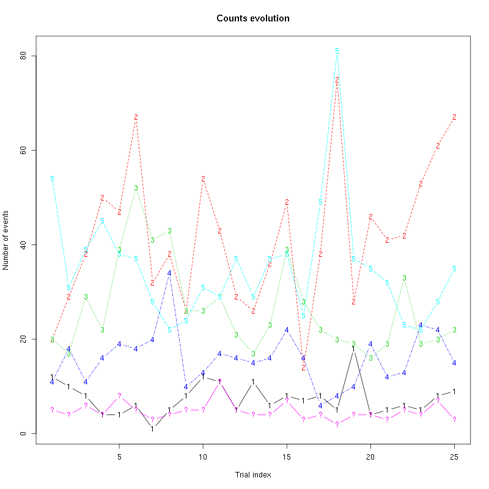
Figure 44: Evolution of the number of events attributed to each unit (1 to 5) or unclassified ("?") during the 25 trials of Apple for tetrodeD1.
The waveform evolution is:
waveform_evolution(a_Apple_tetD1,threshold_factor)
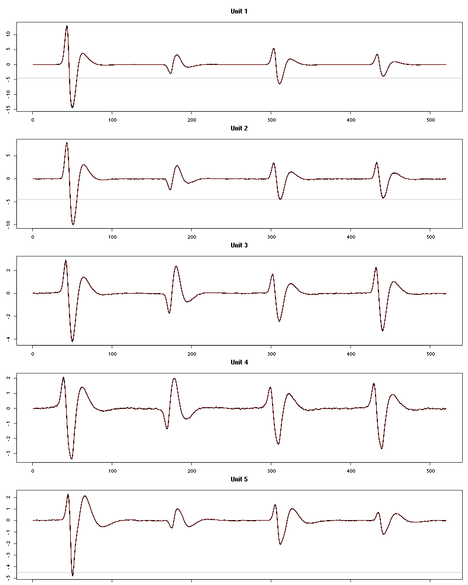
Figure 45: Evolution of the templates of each unit during the 25 trials of Apple for tetrodeD1.
The observed counting processes, inter spike intervals densities and raster plots are:
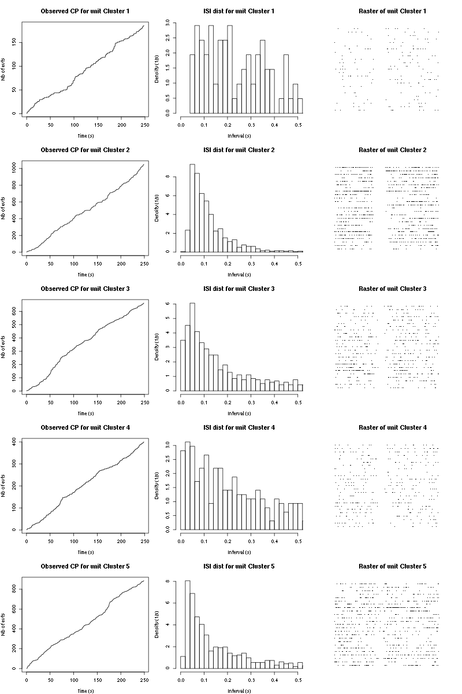
Figure 46: Observed counting processes, empirical inter spike interval distributions and raster plots for Apple.
15.3 Save results
Before analyzing the next set of trials we save the output of sort_many_trials to disk with:
save(a_Apple_tetD1s,
file=paste0("tetD1_analysis/tetD1_",stim_name,"_summary_obj.rda"))
We write to disk the spike trains in text mode:
for (c_idx in 1:length(a_Apple_tetD1$spike_trains))
if (!is.null(a_Apple_tetD1$spike_trains[[c_idx]]))
cat(a_Apple_tetD1$spike_trains[[c_idx]],file=paste0("locust20000421_spike_trains/locust20000421_Apple_tetD1_u",c_idx,".txt"),sep="\n")
16 25 trials with Mint
We will carry out an analysis of the 25 trials from Mint.
16.1 Do the job
stim_name = "Mint"
a_Mint_tetD1=smt(stim_name=stim_name,
trial_nbs=1:25,
centers=a_Apple_tetD1$centers,
counts=a_Apple_tetD1$counts)
16.2 Diagnostic plots
The counts evolution is:
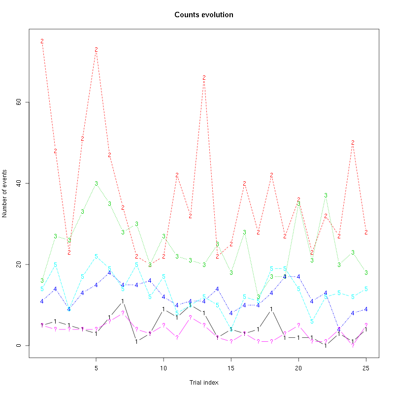
Figure 47: Evolution of the number of events attributed to each unit (1 to 5) or unclassified ("?") during the 25 trials of Mint for tetrodeD1.
The waveform evolution is:
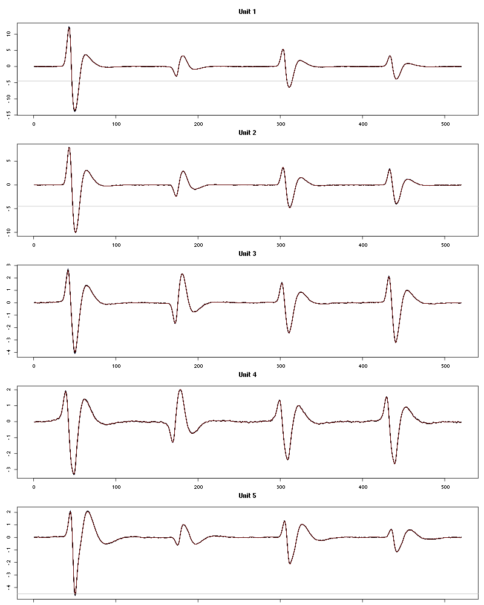
Figure 48: Evolution of the templates of each unit during the 25 trials of Mint for tetrodeD1.
The observed counting processes, inter spike intervals densities and raster plots are:
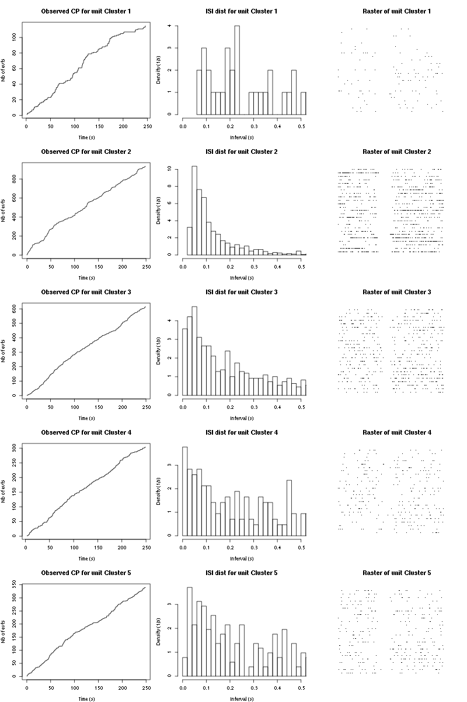
Figure 49: Observed counting processes, empirical inter spike interval distributions and raster plots for Mint.
16.3 Save results
Before analyzing the next set of trials we save the output of sort_many_trials to disk with:
save(a_Mint_tetD1,
file=paste0("tetD1_analysis/tetD1_",stim_name,"_summary_obj.rda"))
We write to disk the spike trains in text mode:
for (c_idx in 1:length(a_Mint_sterC$spike_trains))
if (!is.null(a_Mint_sterC$spike_trains[[c_idx]]))
cat(a_Mint_sterC$spike_trains[[c_idx]],file=paste0("locust20000421_spike_trains/locust20000421_Mint_tetD1_u",c_idx,".txt"),sep="\n")
17 25 trials with Strawberry
We will carry out an analysis of the 25 trials from Strawberry.
17.1 Do the job
stim_name = "Strawberry"
a_Strawberry_tetD1=smt(stim_name=stim_name,
trial_nbs=1:25,
centers=a_Mint_tetD1$centers,
counts=a_Mint_tetD1$counts)
17.2 Diagnostic plots
The counts evolution is:

Figure 50: Evolution of the number of events attributed to each unit (1 to 5) or unclassified ("?") during the 25 trials of Strawberry for tetrodeD1.
The waveform evolution is:
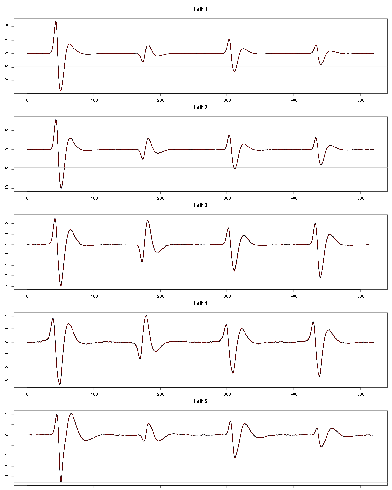
Figure 51: Evolution of the templates of each unit during the 25 trials of Strawberry for tetrodeD1.
The observed counting processes, inter spike intervals densities and raster plots are:
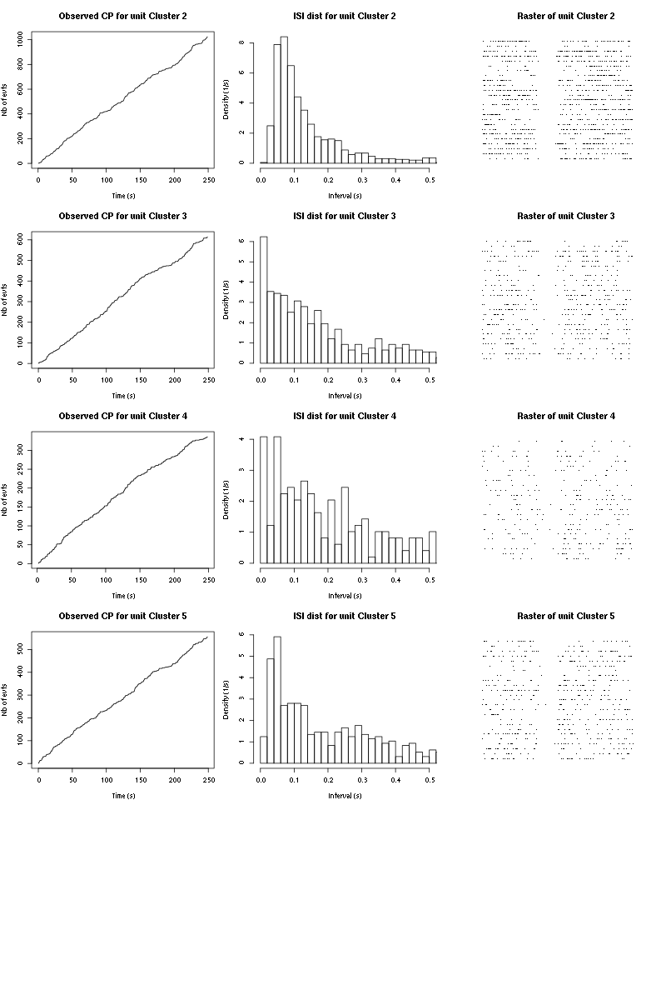
Figure 52: Observed counting processes, empirical inter spike interval distributions and raster plots for Strawberry.
17.3 Save results
Before analyzing the next set of trials we save the output of sort_many_trials to disk with:
save(a_Strawberry_tetD1,
file=paste0("tetD1_analysis/tetD1_",stim_name,"_summary_obj.rda"))
We write to disk the spike trains in text mode:
for (c_idx in 1:length(a_Strawberry_sterC$spike_trains))
if (!is.null(a_Strawberry_sterC$spike_trains[[c_idx]]))
cat(a_Strawberry_sterC$spike_trains[[c_idx]],file=paste0("locust20000421_spike_trains/locust20000421_Strawberry_tetD1_u",c_idx,".txt"),sep="\n")
18 25 trials with Amyl Acetate
We will carry out an analysis of the 25 trials from Amyl Acetate.
18.1 Do the job
stim_name = "Amyl Acetate"
a_Amyl_Acetate_tetD1=smt(stim_name=stim_name,
trial_nbs=1:25,
centers=a_Strawberry_tetD1$centers,
counts=a_Strawberry_tetD1$counts)
18.2 Diagnostic plots
The counts evolution is:

Figure 53: Evolution of the number of events attributed to each unit (1 to 5) or unclassified ("?") during the 25 trials of Amyl Acetate for tetrodeD1.
The waveform evolution is:

Figure 54: Evolution of the templates of each unit during the 25 trials of Amyl Acetate for tetrodeD1.
The observed counting processes, inter spike intervals densities and raster plots are:

Figure 55: Observed counting processes, empirical inter spike interval distributions and raster plots for Amyl Acetate.
18.3 Save results
Before analyzing the next set of trials we save the output of sort_many_trials to disk with:
save(a_Amyl_Acetate_tetD1,
file=paste0("tetD1_analysis/tetD1_",stim_name,"_summary_obj.rda"))
We write to disk the spike trains in text mode:
for (c_idx in 1:length(a_Amyl_Acetate_tetD1$spike_trains))
if (!is.null(a_Amyl_Acetate_tetD1$spike_trains[[c_idx]]))
cat(a_Amyl_Acetate_tetD1$spike_trains[[c_idx]],file=paste0("locust20000421_spike_trains/locust20000421_Amyl Acetate_tetD1_u",c_idx,".txt"),sep="\n")
19 25 trials with Octaldehyde
We will carry out an analysis of the 25 trials from Octaldehyde.
19.1 Do the job
stim_name = "Octaldehyde"
a_Octaldehyde_tetD1=smt(stim_name=stim_name,
trial_nbs=1:25,
centers=a_Amyl_Acetate_tetD1$centers,
counts=a_Amyl_Acetate_tetD1$counts)
19.2 Diagnostic plots
The counts evolution is:
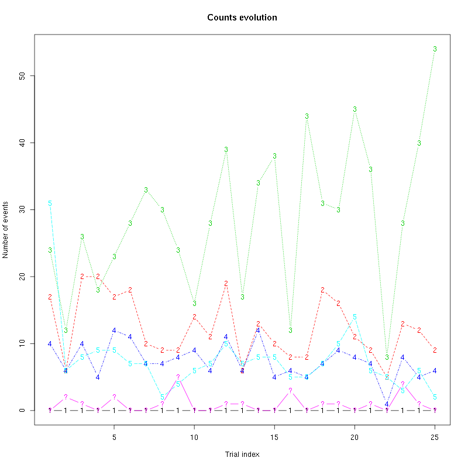
Figure 56: Evolution of the number of events attributed to each unit (1 to 5) or unclassified ("?") during the 25 trials of Octaldehyde for tetrodeD1.
The waveform evolution is:
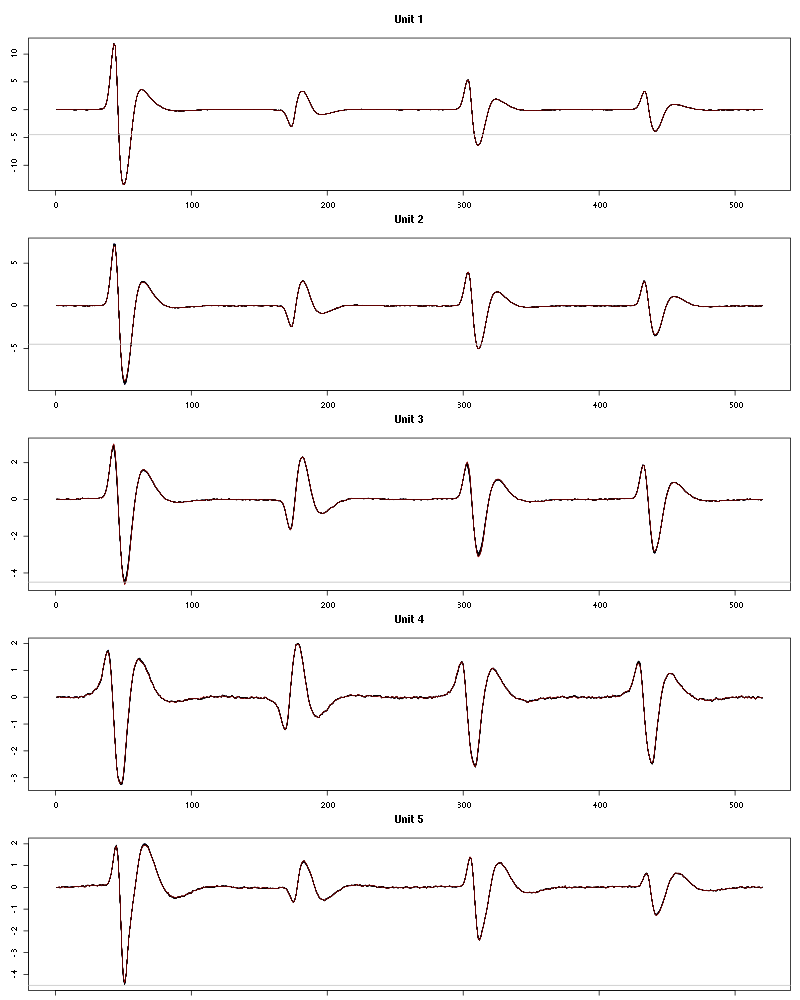
Figure 57: Evolution of the templates of each unit during the 25 trials of Octaldehyde for tetrodeD1.
The observed counting processes, inter spike intervals densities and raster plots are:
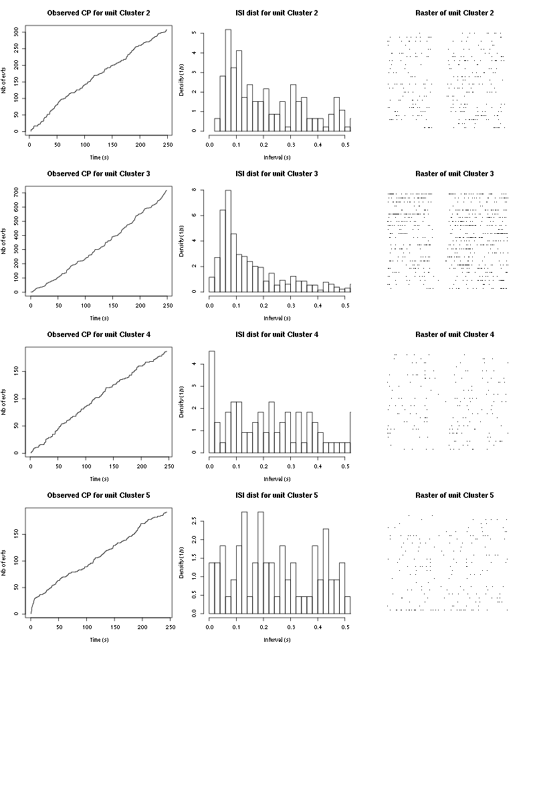
Figure 58: Observed counting processes, empirical inter spike interval distributions and raster plots for Octaldehyde.
19.3 Save results
Before analyzing the next set of trials we save the output of sort_many_trials to disk with:
save(a_Octaldehyde_tetD1,
file=paste0("tetD1_analysis/tetD1_",stim_name,"_summary_obj.rda"))
We write to disk the spike trains in text mode:
for (c_idx in 1:length(a_Octaldehyde_tetD1$spike_trains))
if (!is.null(a_Octaldehyde_tetD1$spike_trains[[c_idx]]))
cat(a_Octaldehyde_tetD1$spike_trains[[c_idx]],file=paste0("locust20000421_spike_trains/locust20000421_Octaldehyde_tetD1_u",c_idx,".txt"),sep="\n")
20 25 trials with 1-Octanol (10^-5)
We will carry out an analysis of the 25 trials from 1-Octanol (10^-5).
20.1 Do the job
stim_name = "1-Octanol (10^-5)"
a_1_Octanol_5_tetD1=smt(stim_name=stim_name,
trial_nbs=1:25,
centers=a_Octaldehyde_tetD1$centers,
counts=a_Octaldehyde_tetD1$counts)
20.2 Diagnostic plots
The counts evolution is:
-count-evolution-tetD1.png)
Figure 59: Evolution of the number of events attributed to each unit (1 to 5) or unclassified ("?") during the 25 trials of 1-Octanol (10^-5) for tetrodeD1.
The waveform evolution is:
-waveform-evolution-tetD1.png)
Figure 60: Evolution of the templates of each unit during the 25 trials of 1-Octanol (10^-5) for tetrodeD1.
The observed counting processes, inter spike intervals densities and raster plots are:
-CP-and-ISI-dist-tetD1.png)
Figure 61: Observed counting processes, empirical inter spike interval distributions and raster plots for 1-Octanol (10^-5).
20.3 Save results
Before analyzing the next set of trials we save the output of sort_many_trials to disk with:
save(a_1_Octanol_5_tetD1,
file=paste0("tetD1_analysis/tetD1_",stim_name,"_summary_obj.rda"))
We write to disk the spike trains in text mode:
for (c_idx in 1:length(a_1_Octanol_5_tetD1$spike_trains))
if (!is.null(a_1_Octanol_5_tetD1$spike_trains[[c_idx]]))
cat(a_1_Octanol_5_tetD1$spike_trains[[c_idx]],file=paste0("locust20000421_spike_trains/locust20000421_1-Octanol (10^-5)_tetD1_u",c_idx,".txt"),sep="\n")
21 25 trials with 1-Octanol (10^-4)
We will carry out an analysis of the 25 trials from 1-Octanol (10^-4).
21.1 Do the job
stim_name = "1-Octanol (10^-4)"
a_1_Octanol_4_tetD1=smt(stim_name=stim_name,
trial_nbs=1:25,
centers=a_1_Octanol_5_tetD1$centers,
counts=a_1_Octanol_5_tetD1$counts)
21.2 Diagnostic plots
The counts evolution is:
-count-evolution-tetD1.png)
Figure 62: Evolution of the number of events attributed to each unit (1 to 5) or unclassified ("?") during the 25 trials of 1-Octanol (10^-4) for tetrodeD1.
The waveform evolution is:
-waveform-evolution-tetD1.png)
Figure 63: Evolution of the templates of each unit during the 25 trials of 1-Octanol (10^-4) for tetrodeD1.
The observed counting processes, inter spike intervals densities and raster plots are:
-CP-and-ISI-dist-tetD1.png)
Figure 64: Observed counting processes, empirical inter spike interval distributions and raster plots for 1-Octanol (10^-4).
21.3 Save results
Before analyzing the next set of trials we save the output of sort_many_trials to disk with:
save(a_1_Octanol_4_tetD1,
file=paste0("tetD1_analysis/tetD1_",stim_name,"_summary_obj.rda"))
We write to disk the spike trains in text mode:
for (c_idx in 1:length(a_1_Octanol_4_tetD1$spike_trains))
if (!is.null(a_1_Octanol_4_tetD1$spike_trains[[c_idx]]))
cat(a_1_Octanol_4_tetD1$spike_trains[[c_idx]],file=paste0("locust20000421_spike_trains/locust20000421_1-Octanol (10^-4)_tetD1_u",c_idx,".txt"),sep="\n")
22 25 trials with 1-Octanol (10^-3)
We will carry out an analysis of the 25 trials from 1-Octanol (10^-3).
22.1 Do the job
stim_name = "1-Octanol (10^-3)"
a_1_Octanol_3_tetD1=smt(stim_name=stim_name,
trial_nbs=1:25,
centers=a_1_Octanol_4_tetD1$centers,
counts=a_1_Octanol_4_tetD1$counts)
22.2 Diagnostic plots
The counts evolution is:
-count-evolution-tetD1.png)
Figure 65: Evolution of the number of events attributed to each unit (1 to 5) or unclassified ("?") during the 25 trials of 1-Octanol (10^-3) for tetrodeD1.
The waveform evolution is:
-waveform-evolution-tetD1.png)
Figure 66: Evolution of the templates of each unit during the 25 trials of 1-Octanol (10^-3) for tetrodeD1.
The observed counting processes, inter spike intervals densities and raster plots are:
-CP-and-ISI-dist-tetD1.png)
Figure 67: Observed counting processes, empirical inter spike interval distributions and raster plots for 1-Octanol (10^-3).
22.3 Save results
Before analyzing the next set of trials we save the output of sort_many_trials to disk with:
save(a_1_Octanol_3_tetD1,
file=paste0("tetD1_analysis/tetD1_",stim_name,"_summary_obj.rda"))
We write to disk the spike trains in text mode:
for (c_idx in 1:length(a_1_Octanol_3_tetD1$spike_trains))
if (!is.null(a_1_Octanol_3_tetD1$spike_trains[[c_idx]]))
cat(a_1_Octanol_3_tetD1$spike_trains[[c_idx]],file=paste0("locust20000421_spike_trains/locust20000421_1-Octanol (10^-3)_tetD1_u",c_idx,".txt"),sep="\n")
23 25 trials with 1-Octanol (10^-2)
We will carry out an analysis of the 25 trials from 1-Octanol (10^-2).
23.1 Do the job
stim_name = "1-Octanol (10^-2)"
a_1_Octanol_2_tetD1=smt(stim_name=stim_name,
trial_nbs=1:25,
centers=a_1_Octanol_3_tetD1$centers,
counts=a_1_Octanol_3_tetD1$counts)
23.2 Diagnostic plots
The counts evolution is:
-count-evolution-tetD1.png)
Figure 68: Evolution of the number of events attributed to each unit (1 to 5) or unclassified ("?") during the 25 trials of 1-Octanol (10^-2) for tetrodeD1.
The waveform evolution is:
-waveform-evolution-tetD1.png)
Figure 69: Evolution of the templates of each unit during the 25 trials of 1-Octanol (10^-2) for tetrodeD1.
The observed counting processes, inter spike intervals densities and raster plots are:
-CP-and-ISI-dist-tetD1.png)
Figure 70: Observed counting processes, empirical inter spike interval distributions and raster plots for 1-Octanol (10^-2).
23.3 Save results
Before analyzing the next set of trials we save the output of sort_many_trials to disk with:
save(a_1_Octanol_2_tetD1,
file=paste0("tetD1_analysis/tetD1_",stim_name,"_summary_obj.rda"))
We write to disk the spike trains in text mode:
for (c_idx in 1:length(a_1_Octanol_2_tetD1$spike_trains))
if (!is.null(a_1_Octanol_2_tetD1$spike_trains[[c_idx]]))
cat(a_1_Octanol_2_tetD1$spike_trains[[c_idx]],file=paste0("locust20000421_spike_trains/locust20000421_1-Octanol (10^-2)_tetD1_u",c_idx,".txt"),sep="\n")
24 25 trials with 1-Octanol (10^-1)
We will carry out an analysis of the 25 trials from 1-Octanol (10^-1).
24.1 Do the job
stim_name = "1-Octanol (10^-1)"
a_1_Octanol_1_tetD1=smt(stim_name=stim_name,
trial_nbs=1:25,
centers=a_1_Octanol_2_tetD1$centers,
counts=a_1_Octanol_2_tetD1$counts)
24.2 Diagnostic plots
The counts evolution is:
-count-evolution-tetD1.png)
Figure 71: Evolution of the number of events attributed to each unit (1 to 5) or unclassified ("?") during the 25 trials of 1-Octanol (10^-1) for tetrodeD1.
The waveform evolution is:
-waveform-evolution-tetD1.png)
Figure 72: Evolution of the templates of each unit during the 25 trials of 1-Octanol (10^-1) for tetrodeD1.
The observed counting processes, inter spike intervals densities and raster plots are:
-CP-and-ISI-dist-tetD1.png)
Figure 73: Observed counting processes, empirical inter spike interval distributions and raster plots for 1-Octanol (10^-1).
24.3 Save results
Before analyzing the next set of trials we save the output of sort_many_trials to disk with:
save(a_1_Octanol_1_tetD1,
file=paste0("tetD1_analysis/tetD1_",stim_name,"_summary_obj.rda"))
We write to disk the spike trains in text mode:
for (c_idx in 1:length(a_1_Octanol_1_tetD1$spike_trains))
if (!is.null(a_1_Octanol_1_tetD1$spike_trains[[c_idx]]))
cat(a_1_Octanol_1_tetD1$spike_trains[[c_idx]],file=paste0("locust20000421_spike_trains/locust20000421_1-Octanol (10^-1)_tetD1_u",c_idx,".txt"),sep="\n")
25 25 trials with 1-Octanol (10^-0) second
We will carry out an analysis of the 25 trials from 1-Octanol (10^-0) second.
25.1 Do the job
stim_name = "1-Octanol (10^-0) second"
a_1_Octanol_0b_tetD1=smt(stim_name=stim_name,
trial_nbs=1:25,
centers=a_1_Octanol_1_tetD1$centers,
counts=a_1_Octanol_1_tetD1$counts)
25.2 Diagnostic plots
The counts evolution is:
 second-count-evolution-tetD1.png)
Figure 74: Evolution of the number of events attributed to each unit (1 to 5) or unclassified ("?") during the 25 trials of 1-Octanol (10^-0) second for tetrodeD1.
The waveform evolution is:
 second-waveform-evolution-tetD1.png)
Figure 75: Evolution of the templates of each unit during the 25 trials of 1-Octanol (10^-0) second for tetrodeD1.
The observed counting processes, inter spike intervals densities and raster plots are:
 second-CP-and-ISI-dist-tetD1.png)
Figure 76: Observed counting processes, empirical inter spike interval distributions and raster plots for 1-Octanol (10^-0) second.
25.3 Save results
Before analyzing the next set of trials we save the output of sort_many_trials to disk with:
save(a_1_Octanol_0b_tetD1,
file=paste0("tetD1_analysis/tetD1_",stim_name,"_summary_obj.rda"))
We write to disk the spike trains in text mode:
for (c_idx in 1:length(a_1_Octanol_0b_tetD1$spike_trains))
if (!is.null(a_1_Octanol_0b_tetD1$spike_trains[[c_idx]]))
cat(a_1_Octanol_0b_tetD1$spike_trains[[c_idx]],file=paste0("locust20000421_spike_trains/locust20000421_1-Octanol (10^-0) second_tetD1_u",c_idx,".txt"),sep="\n")